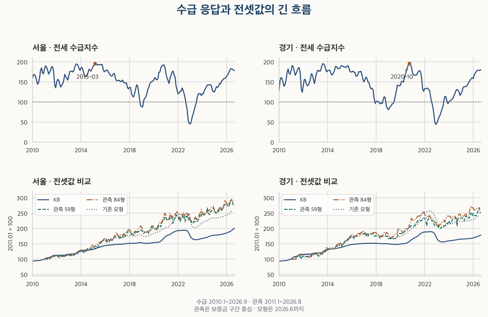
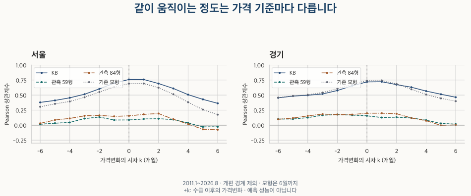

시장 심리 읽기 · 전세 수급과 가격
전세수급지수와 전셋값, 정말 같이 움직였을까?
서울·경기의 전세수급지수를 KB 가격지수와 실제 59형·84형 보증금 구간으로 비교합니다. 수급 수준과 변화, 2021·2022년 경로, 전체 시차와 신고·통계 개편의 한계를 함께 확인합니다.
분석 기간 · 수급·KB 2010.1~2026.9 · 계약 주 비교 2011.1~2026.8 | 자료 기준일 · 공식 수급 확인 2026-10-17
‘전세 공급이 부족하다’는 기사와 내가 찾는 집의 보증금은 얼마나 함께 움직일까요? 서울·경기의 전세수급지수를 KB 아파트 전세가격지수, 실제 계약의 보증금 중위값, 기존 공개 모형지수와 나란히 비교했습니다. 무엇을 전셋값으로 놓느냐에 따라 동행의 정도가 달랐습니다.
전세수급지수 100은 공급 부족 100%라는 뜻인가요?
아닙니다. KB의 전세수급지수는 표본 중개업소의 응답으로 만든 100 + 공급부족 응답 비중 − 공급충분 응답 비중입니다. 0~200 범위이며, 100은 부족과 충분 응답 비중이 같다는 뜻입니다. 공급적절 응답도 있으므로 지수에서 100을 빼는 것만으로 부족 응답 비중을 구할 수 없습니다.
가령 부족 60%·충분 20%·적절 20%라는 가상 응답이면 지수는 140입니다. 부족 40%·충분 0%·적절 60%도 같은 140입니다. 지수가 같아도 응답 구성이 다를 수 있고, 이 숫자는 실제 빈집·매물 부족량이나 계약 당사자의 비율이 아닙니다.
월간 조사 기준은 15일이 포함된 주의 월요일이고, 발표는 조사월 말 또는 다음 달 초입니다. 따라서 달 이름이 같아도 설문 조사일, 발표일, 한 달 동안의 계약일은 일치하지 않습니다. KB 월간 전세수급지수 원표와 KB 데이터허브 이용가이드에서 지표의 질문과 산식을 확인할 수 있습니다.
같은 달의 어떤 전셋값과 함께 움직였나요?
주 비교는 수급지수의 높고 낮음과 가격의 로그 전월변화입니다. Pearson은 두 값의 선형 동행 정도, Spearman은 순위를 이용한 동행 정도를 나타냅니다. 둘 다 −1~1 범위이며, 양수는 같은 방향의 관계를 뜻하지만 원인이나 예측 성공률은 아닙니다.
| 지역 | 가격 기준 | 비교 월 쌍 | Pearson | Spearman |
|---|---|---|---|---|
| 서울 | KB 전세가격지수 | 184 | 0.760 | 0.717 |
| 서울 | 기존 공개 모형지수 | 182 | 0.690 | 0.565 |
| 서울 | 관측 59형 구간 중심 | 184 | 0.086 | 0.098 |
| 서울 | 관측 84형 구간 중심 | 184 | 0.154 | 0.105 |
| 경기 | KB 전세가격지수 | 184 | 0.719 | 0.790 |
| 경기 | 기존 공개 모형지수 | 182 | 0.741 | 0.759 |
| 경기 | 관측 59형 구간 중심 | 184 | 0.155 | 0.168 |
| 경기 | 관측 84형 구간 중심 | 184 | 0.198 | 0.199 |
관측 보증금은 월세가 0인 정제 전세 계약에서 지역·월·평형군별 중위값을 구한 뒤 구간으로 표시했습니다. 59형(전용 17·18평형)은 54.55㎡ 이상 61.16㎡ 미만, 84형(전용 25·26평형)은 80.99㎡ 이상 87.60㎡ 미만의 표준 비교군입니다. 정확히 59㎡·84㎡인 집만 고른 것이 아니며, 면적·평형 용어에서 묶는 기준을 확인할 수 있습니다. 신규·갱신·계약구분 미기재를 포함하며, 미기재를 신규로 채우지 않았습니다.
관측값은 대부분 1,000만 원 폭, 두 경계 월은 2,000만 원 폭입니다. 표의 상관과 그림은 모두 그 구간의 중심값에서 계산했습니다. 작은 구간 안의 변화를 구분하지 못하는 표시 오차가 있습니다. KB끼리 높은 상관이 관측 계약의 월별 중위값에서도 같은 크기로 나타났다고 말할 수는 없습니다.
가격 기준이 다르면 답하는 질문도 달라집니다. KB 아파트 전세가격지수는 표본 주택의 조사·평가 가격을 지역 재고 가중치 등으로 집계합니다. 계약 중위값은 그달 실제로 계약된 집들의 가운데 금액입니다. 비싼 집이나 갱신 계약의 몫이 바뀌어도 중위값이 달라질 수 있습니다. 어느 하나를 모든 주택의 ‘진짜 가격 변화’로 정하지 않았습니다.
서울 계약은 25개 구, 경기는 수집한 36개 시·구의 소계입니다. KB의 경기 전체와 수집 경기의 범위가 다릅니다. 기존 모형지수도 수집 주택을 같은 구성으로 비교한 이미 공개된 0.1단위 값이며, 2026년 6월까지만 있습니다. 모형의 큰 상관을 관측 결과보다 우월한 예측력으로 해석하지 않습니다.

수급지수가 이번 달 올랐으면 전셋값도 오른다고 볼 수 있나요?
앞선 상관만으로는 그렇게 말할 수 없습니다. 수급지수의 전월 차이와 가격의 로그 전월변화를 비교하면 KB 기준 Pearson은 서울 −0.040·경기 −0.038입니다. 관측 59형·84형도 서울 −0.075·−0.117, 수집 경기 0.127·−0.010으로 가격 기준과 지역에 따라 달랐습니다.
부족 응답이 많은 상태가 여러 달 이어지는 동안 가격이 오르는 관계와, 부족 응답이 지난달보다 더 늘 때 가격이 더 오르는 관계는 서로 다릅니다. 반대로 가격 수준끼리 비교하면 장기 추세의 영향도 섞입니다. 이번 전기간의 수급 수준/KB 가격 수준 상관은 서울 −0.412·경기 −0.371이었습니다. 분석 대상을 바꾸면서 같은 ‘상관’이라는 말로 결론을 이어 붙이면 안 됩니다.
수급 수준 / 가격 변화 비교 펼치기
| 지역 | 가격 기준 | 월 쌍 | Pearson | Spearman |
|---|---|---|---|---|
| 서울 | KB 전세가격지수 | 184 | 0.760 | 0.717 |
| 서울 | 기존 공개 모형지수 | 182 | 0.690 | 0.565 |
| 서울 | 관측 59형 구간 중심 | 184 | 0.086 | 0.098 |
| 서울 | 관측 84형 구간 중심 | 184 | 0.154 | 0.105 |
| 경기 | KB 전세가격지수 | 184 | 0.719 | 0.790 |
| 경기 | 기존 공개 모형지수 | 182 | 0.741 | 0.759 |
| 경기 | 관측 59형 구간 중심 | 184 | 0.155 | 0.168 |
| 경기 | 관측 84형 구간 중심 | 184 | 0.198 | 0.199 |
수급 변화 / 가격 변화 비교 펼치기
| 지역 | 가격 기준 | 월 쌍 | Pearson | Spearman |
|---|---|---|---|---|
| 서울 | KB 전세가격지수 | 184 | -0.040 | -0.072 |
| 서울 | 기존 공개 모형지수 | 182 | -0.047 | 0.003 |
| 서울 | 관측 59형 구간 중심 | 184 | -0.075 | -0.062 |
| 서울 | 관측 84형 구간 중심 | 184 | -0.117 | -0.183 |
| 경기 | KB 전세가격지수 | 184 | -0.038 | -0.053 |
| 경기 | 기존 공개 모형지수 | 182 | -0.038 | -0.037 |
| 경기 | 관측 59형 구간 중심 | 184 | 0.127 | 0.055 |
| 경기 | 관측 84형 구간 중심 | 184 | -0.010 | -0.014 |
수급 수준 / 가격 수준 비교 펼치기
| 지역 | 가격 기준 | 월 쌍 | Pearson | Spearman |
|---|---|---|---|---|
| 서울 | KB 전세가격지수 | 188 | -0.412 | -0.449 |
| 서울 | 기존 공개 모형지수 | 186 | -0.462 | -0.499 |
| 서울 | 관측 59형 구간 중심 | 188 | -0.405 | -0.435 |
| 서울 | 관측 84형 구간 중심 | 188 | -0.410 | -0.434 |
| 경기 | KB 전세가격지수 | 188 | -0.371 | -0.390 |
| 경기 | 기존 공개 모형지수 | 186 | -0.429 | -0.428 |
| 경기 | 관측 59형 구간 중심 | 188 | -0.333 | -0.335 |
| 경기 | 관측 84형 구간 중심 | 188 | -0.337 | -0.345 |
관측 보증금의 약한 동행을 곧바로 “수급은 전셋값과 관계없다”는 결론으로 바꾸는 것도 지나칩니다. 거래 주택·신규/갱신 구성과 신고 범위가 달라지는 자료이고, 동일 단지·평형이 모든 달에 충분히 관측되는 전기간 경기 비교에는 자료가 충분하지 않았습니다. 순수한 동일 주택 가격의 움직임과 구성 효과를 완전히 분리한 결과가 아닙니다.
기간을 달리해도 살폈습니다. 2021년 6월 이후 같은 달 KB 상관은 서울 0.867·경기 0.781, 관측 59형은 서울 −0.006·수집 경기 0.052였습니다. 최근 세 달을 제외한 비교, 신고제 전후, 2022년 이후 및 KB 개편 사이의 기간을 아래에 남겼습니다. 24쌍 미만인 짧은 창은 ‘비교 불가’이며 상관 0이라는 뜻이 아닙니다.
전체 공통 기간 · 2011-01~2026-08 펼치기
| 지역 | 가격 기준 | 월 쌍 | Pearson | Spearman |
|---|---|---|---|---|
| 서울 | KB 전세가격지수 | 184 | 0.760 | 0.717 |
| 서울 | 기존 공개 모형지수 | 182 | 0.690 | 0.565 |
| 서울 | 관측 59형 구간 중심 | 184 | 0.086 | 0.098 |
| 서울 | 관측 84형 구간 중심 | 184 | 0.154 | 0.105 |
| 경기 | KB 전세가격지수 | 184 | 0.719 | 0.790 |
| 경기 | 기존 공개 모형지수 | 182 | 0.741 | 0.759 |
| 경기 | 관측 59형 구간 중심 | 184 | 0.155 | 0.168 |
| 경기 | 관측 84형 구간 중심 | 184 | 0.198 | 0.199 |
신고제 이전 · 2011-01~2021-05 펼치기
| 지역 | 가격 기준 | 월 쌍 | Pearson | Spearman |
|---|---|---|---|---|
| 서울 | KB 전세가격지수 | 124 | 0.674 | 0.805 |
| 서울 | 기존 공개 모형지수 | 124 | 0.691 | 0.675 |
| 서울 | 관측 59형 구간 중심 | 124 | 0.122 | 0.128 |
| 서울 | 관측 84형 구간 중심 | 124 | 0.152 | 0.128 |
| 경기 | KB 전세가격지수 | 124 | 0.669 | 0.865 |
| 경기 | 기존 공개 모형지수 | 124 | 0.808 | 0.830 |
| 경기 | 관측 59형 구간 중심 | 124 | 0.193 | 0.196 |
| 경기 | 관측 84형 구간 중심 | 124 | 0.209 | 0.225 |
신고제 이후 · 2021-06~2026-08 펼치기
| 지역 | 가격 기준 | 월 쌍 | Pearson | Spearman |
|---|---|---|---|---|
| 서울 | KB 전세가격지수 | 59 | 0.867 | 0.794 |
| 서울 | 기존 공개 모형지수 | 57 | 0.794 | 0.531 |
| 서울 | 관측 59형 구간 중심 | 59 | -0.006 | 0.039 |
| 서울 | 관측 84형 구간 중심 | 59 | 0.156 | 0.099 |
| 경기 | KB 전세가격지수 | 59 | 0.781 | 0.644 |
| 경기 | 기존 공개 모형지수 | 57 | 0.768 | 0.557 |
| 경기 | 관측 59형 구간 중심 | 59 | 0.052 | 0.053 |
| 경기 | 관측 84형 구간 중심 | 59 | 0.123 | 0.059 |
2022년 이후 · 2022-01~2026-08 펼치기
| 지역 | 가격 기준 | 월 쌍 | Pearson | Spearman |
|---|---|---|---|---|
| 서울 | KB 전세가격지수 | 52 | 0.867 | 0.773 |
| 서울 | 기존 공개 모형지수 | 50 | 0.779 | 0.450 |
| 서울 | 관측 59형 구간 중심 | 52 | 0.007 | 0.012 |
| 서울 | 관측 84형 구간 중심 | 52 | 0.158 | 0.072 |
| 경기 | KB 전세가격지수 | 52 | 0.750 | 0.606 |
| 경기 | 기존 공개 모형지수 | 50 | 0.730 | 0.483 |
| 경기 | 관측 59형 구간 중심 | 52 | 0.057 | 0.065 |
| 경기 | 관측 84형 구간 중심 | 52 | 0.118 | 0.048 |
2021년 · 2021-01~2021-12 펼치기
| 지역 | 가격 기준 | 월 쌍 | Pearson | Spearman |
|---|---|---|---|---|
| 서울 | KB 전세가격지수 | 11 | 비교 불가 | 비교 불가 |
| 서울 | 기존 공개 모형지수 | 11 | 비교 불가 | 비교 불가 |
| 서울 | 관측 59형 구간 중심 | 11 | 비교 불가 | 비교 불가 |
| 서울 | 관측 84형 구간 중심 | 11 | 비교 불가 | 비교 불가 |
| 경기 | KB 전세가격지수 | 11 | 비교 불가 | 비교 불가 |
| 경기 | 기존 공개 모형지수 | 11 | 비교 불가 | 비교 불가 |
| 경기 | 관측 59형 구간 중심 | 11 | 비교 불가 | 비교 불가 |
| 경기 | 관측 84형 구간 중심 | 11 | 비교 불가 | 비교 불가 |
2022년 · 2022-01~2022-12 펼치기
| 지역 | 가격 기준 | 월 쌍 | Pearson | Spearman |
|---|---|---|---|---|
| 서울 | KB 전세가격지수 | 10 | 비교 불가 | 비교 불가 |
| 서울 | 기존 공개 모형지수 | 10 | 비교 불가 | 비교 불가 |
| 서울 | 관측 59형 구간 중심 | 10 | 비교 불가 | 비교 불가 |
| 서울 | 관측 84형 구간 중심 | 10 | 비교 불가 | 비교 불가 |
| 경기 | KB 전세가격지수 | 10 | 비교 불가 | 비교 불가 |
| 경기 | 기존 공개 모형지수 | 10 | 비교 불가 | 비교 불가 |
| 경기 | 관측 59형 구간 중심 | 10 | 비교 불가 | 비교 불가 |
| 경기 | 관측 84형 구간 중심 | 10 | 비교 불가 | 비교 불가 |
최신 3개월 제외 · 2011-01~2026-06 펼치기
| 지역 | 가격 기준 | 월 쌍 | Pearson | Spearman |
|---|---|---|---|---|
| 서울 | KB 전세가격지수 | 182 | 0.757 | 0.711 |
| 서울 | 기존 공개 모형지수 | 182 | 0.690 | 0.565 |
| 서울 | 관측 59형 구간 중심 | 182 | 0.102 | 0.118 |
| 서울 | 관측 84형 구간 중심 | 182 | 0.157 | 0.111 |
| 경기 | KB 전세가격지수 | 182 | 0.718 | 0.788 |
| 경기 | 기존 공개 모형지수 | 182 | 0.741 | 0.759 |
| 경기 | 관측 59형 구간 중심 | 182 | 0.166 | 0.178 |
| 경기 | 관측 84형 구간 중심 | 182 | 0.201 | 0.202 |
2022 개편 이전 · 2011-01~2022-10 펼치기
| 지역 | 가격 기준 | 월 쌍 | Pearson | Spearman |
|---|---|---|---|---|
| 서울 | KB 전세가격지수 | 141 | 0.684 | 0.785 |
| 서울 | 기존 공개 모형지수 | 141 | 0.630 | 0.623 |
| 서울 | 관측 59형 구간 중심 | 141 | 0.099 | 0.123 |
| 서울 | 관측 84형 구간 중심 | 141 | 0.134 | 0.130 |
| 경기 | KB 전세가격지수 | 141 | 0.686 | 0.837 |
| 경기 | 기존 공개 모형지수 | 141 | 0.728 | 0.781 |
| 경기 | 관측 59형 구간 중심 | 141 | 0.216 | 0.209 |
| 경기 | 관측 84형 구간 중심 | 141 | 0.245 | 0.255 |
2022 개편 이후 · 2022-11~2026-08 펼치기
| 지역 | 가격 기준 | 월 쌍 | Pearson | Spearman |
|---|---|---|---|---|
| 서울 | KB 전세가격지수 | 43 | 0.875 | 0.730 |
| 서울 | 기존 공개 모형지수 | 41 | 0.776 | 0.356 |
| 서울 | 관측 59형 구간 중심 | 43 | 0.023 | -0.019 |
| 서울 | 관측 84형 구간 중심 | 43 | 0.199 | 0.048 |
| 경기 | KB 전세가격지수 | 43 | 0.746 | 0.609 |
| 경기 | 기존 공개 모형지수 | 41 | 0.709 | 0.417 |
| 경기 | 관측 59형 구간 중심 | 43 | 0.011 | -0.009 |
| 경기 | 관측 84형 구간 중심 | 43 | 0.097 | -0.020 |
2022 개편~2025년 · 2022-11~2025-12 펼치기
| 지역 | 가격 기준 | 월 쌍 | Pearson | Spearman |
|---|---|---|---|---|
| 서울 | KB 전세가격지수 | 37 | 0.883 | 0.612 |
| 서울 | 기존 공개 모형지수 | 37 | 0.779 | 0.283 |
| 서울 | 관측 59형 구간 중심 | 37 | 0.142 | 0.112 |
| 서울 | 관측 84형 구간 중심 | 37 | 0.259 | 0.107 |
| 경기 | KB 전세가격지수 | 37 | 0.760 | 0.408 |
| 경기 | 기존 공개 모형지수 | 37 | 0.715 | 0.309 |
| 경기 | 관측 59형 구간 중심 | 37 | 0.040 | 0.003 |
| 경기 | 관측 84형 구간 중심 | 37 | 0.168 | 0.021 |
2026 기준 이후 · 2026-01~2026-08 펼치기
| 지역 | 가격 기준 | 월 쌍 | Pearson | Spearman |
|---|---|---|---|---|
| 서울 | KB 전세가격지수 | 6 | 비교 불가 | 비교 불가 |
| 서울 | 기존 공개 모형지수 | 4 | 비교 불가 | 비교 불가 |
| 서울 | 관측 59형 구간 중심 | 6 | 비교 불가 | 비교 불가 |
| 서울 | 관측 84형 구간 중심 | 6 | 비교 불가 | 비교 불가 |
| 경기 | KB 전세가격지수 | 6 | 비교 불가 | 비교 불가 |
| 경기 | 기존 공개 모형지수 | 4 | 비교 불가 | 비교 불가 |
| 경기 | 관측 59형 구간 중심 | 6 | 비교 불가 | 비교 불가 |
| 경기 | 관측 84형 구간 중심 | 6 | 비교 불가 | 비교 불가 |
2026 적용 이후 · 2026-04~2026-08 펼치기
| 지역 | 가격 기준 | 월 쌍 | Pearson | Spearman |
|---|---|---|---|---|
| 서울 | KB 전세가격지수 | 4 | 비교 불가 | 비교 불가 |
| 서울 | 기존 공개 모형지수 | 2 | 비교 불가 | 비교 불가 |
| 서울 | 관측 59형 구간 중심 | 4 | 비교 불가 | 비교 불가 |
| 서울 | 관측 84형 구간 중심 | 4 | 비교 불가 | 비교 불가 |
| 경기 | KB 전세가격지수 | 4 | 비교 불가 | 비교 불가 |
| 경기 | 기존 공개 모형지수 | 2 | 비교 불가 | 비교 불가 |
| 경기 | 관측 59형 구간 중심 | 4 | 비교 불가 | 비교 불가 |
| 경기 | 관측 84형 구간 중심 | 4 | 비교 불가 | 비교 불가 |
2026 적용 이전 · 2011-01~2026-03 펼치기
| 지역 | 가격 기준 | 월 쌍 | Pearson | Spearman |
|---|---|---|---|---|
| 서울 | KB 전세가격지수 | 180 | 0.755 | 0.705 |
| 서울 | 기존 공개 모형지수 | 180 | 0.686 | 0.556 |
| 서울 | 관측 59형 구간 중심 | 180 | 0.095 | 0.108 |
| 서울 | 관측 84형 구간 중심 | 180 | 0.155 | 0.108 |
| 경기 | KB 전세가격지수 | 180 | 0.717 | 0.786 |
| 경기 | 기존 공개 모형지수 | 180 | 0.741 | 0.759 |
| 경기 | 관측 59형 구간 중심 | 180 | 0.158 | 0.167 |
| 경기 | 관측 84형 구간 중심 | 180 | 0.200 | 0.200 |
2025 계도 종료 이후 · 2025-06~2026-08 펼치기
| 지역 | 가격 기준 | 월 쌍 | Pearson | Spearman |
|---|---|---|---|---|
| 서울 | KB 전세가격지수 | 12 | 비교 불가 | 비교 불가 |
| 서울 | 기존 공개 모형지수 | 10 | 비교 불가 | 비교 불가 |
| 서울 | 관측 59형 구간 중심 | 12 | 비교 불가 | 비교 불가 |
| 서울 | 관측 84형 구간 중심 | 12 | 비교 불가 | 비교 불가 |
| 경기 | KB 전세가격지수 | 12 | 비교 불가 | 비교 불가 |
| 경기 | 기존 공개 모형지수 | 10 | 비교 불가 | 비교 불가 |
| 경기 | 관측 59형 구간 중심 | 12 | 비교 불가 | 비교 불가 |
| 경기 | 관측 84형 구간 중심 | 12 | 비교 불가 | 비교 불가 |
2021년이 공급 부족의 최고점이었고, 2022년에 모두 같이 떨어졌나요?
2021년은 두 지역 모두 8월에 그해 수급지수가 가장 높았습니다. 그러나 2010년 1월~2026년 9월 전체에서 서울 최고는 2015년 3월 약 195.54, 경기 최고는 2020년 10월 약 195.73입니다. 2021년을 전기간 정점이라고 둔 가정은 자료와 맞지 않았습니다.
2022년 1월과 12월을 비교하면 KB 아파트 전세가격지수는 서울 약 5.74%, 경기 약 6.96% 낮아졌습니다. 이는 전년 12월 대비 연간 변동률이 아니라 같은 해 1월 대비 12월 변화입니다. 이 기간에는 2022년 11월 통계 개편 경계도 들어 있으므로 개편의 효과나 시장 변화만을 분리한 숫자가 아닙니다.
관측 보증금 구간 중심값은 서울 59형 약 −2.33%, 수집 경기 59형 약 −10.71%·84형 약 −10.81%였습니다. 서울 84형의 두 달 중심값은 같았습니다. 같은 표시 구간이라는 뜻이지 그 안에서 보증금이 전혀 바뀌지 않았다는 뜻은 아닙니다. 반올림한 관측값에서 보이지 않는 변화를 정밀한 하락률로 덧붙이지 않았습니다.
연중 높은 달도 달랐습니다. 2022년 KB 최고는 서울 7월·경기 6월, 관측 59형 구간 중심 최고는 두 지역 모두 6월입니다. 수집 경기 84형은 1월이었습니다. 서울 84형은 표시 구간 때문에 최고 중심값인 달이 여러 개입니다. 수급의 정점 하나를 모든 계약 가격의 정점으로 대입하기 어렵습니다.
2021년 월별 경로 펼치기
| 지역 | 월 | 수급지수 | KB 지수 | 관측 59형(만원) | 관측 84형(만원) | 모형지수 |
|---|---|---|---|---|---|---|
| 서울 | 2021-01 | 170.62 | 94.21 | 42,000 | 58,000 | 83.0 |
| 서울 | 2021-02 | 160.14 | 95.25 | 41,000 | 55,000 | 83.5 |
| 서울 | 2021-03 | 154.00 | 96.01 | 41,000 | 55,000 | 83.8 |
| 서울 | 2021-04 | 145.97 | 96.55 | 41,000 | 55,000 | 84.2 |
| 서울 | 2021-05 | 157.85 | 97.25 | 42,000 | 60,000 | 86.1 |
| 서울 | 2021-06 | 166.84 | 98.68 | 42,000 | 57,000 | 87.2 |
| 서울 | 2021-07 | 174.26 | 99.77 | 43,000 | 58,000 | 89.1 |
| 서울 | 2021-08 | 177.04 | 100.87 | 39,000 | 56,000 | 91.3 |
| 서울 | 2021-09 | 167.65 | 101.90 | 41,000 | 58,000 | 93.7 |
| 서울 | 2021-10 | 162.25 | 102.40 | 42,000 | 59,000 | 96.1 |
| 서울 | 2021-11 | 140.07 | 103.34 | 44,000 | 60,000 | 98.5 |
| 서울 | 2021-12 | 129.75 | 103.81 | 43,000 | 61,000 | 100.0 |
| 경기 | 2021-01 | 173.08 | 97.69 | 25,000 | 34,000 | 87.5 |
| 경기 | 2021-02 | 167.47 | 98.97 | 25,000 | 34,000 | 88.5 |
| 경기 | 2021-03 | 166.44 | 100.09 | 25,000 | 34,000 | 89.4 |
| 경기 | 2021-04 | 166.90 | 101.12 | 26,000 | 35,000 | 90.2 |
| 경기 | 2021-05 | 167.44 | 101.97 | 26,000 | 35,000 | 91.2 |
| 경기 | 2021-06 | 171.59 | 103.44 | 27,000 | 36,000 | 93.0 |
| 경기 | 2021-07 | 176.64 | 104.83 | 27,000 | 36,000 | 96.1 |
| 경기 | 2021-08 | 178.03 | 106.76 | 27,000 | 36,000 | 99.0 |
| 경기 | 2021-09 | 174.68 | 108.40 | 27,000 | 37,000 | 103.1 |
| 경기 | 2021-10 | 158.54 | 109.45 | 27,000 | 37,000 | 105.8 |
| 경기 | 2021-11 | 131.35 | 110.52 | 28,000 | 38,000 | 108.3 |
| 경기 | 2021-12 | 126.57 | 111.05 | 28,000 | 38,000 | 109.7 |
2022년 월별 경로 펼치기
| 지역 | 월 | 수급지수 | KB 지수 | 관측 59형(만원) | 관측 84형(만원) | 모형지수 |
|---|---|---|---|---|---|---|
| 서울 | 2022-01 | 120.45 | 104.13 | 43,000 | 60,000 | 100.7 |
| 서울 | 2022-02 | 122.24 | 104.24 | 41,000 | 57,000 | 101.2 |
| 서울 | 2022-03 | 126.49 | 104.22 | 40,000 | 55,000 | 100.8 |
| 서울 | 2022-04 | 127.01 | 104.28 | 42,000 | 59,000 | 100.9 |
| 서울 | 2022-05 | 135.01 | 104.55 | 42,000 | 58,000 | 101.3 |
| 서울 | 2022-06 | 128.03 | 104.73 | 44,000 | 59,000 | 102.5 |
| 서울 | 2022-07 | 120.95 | 104.79 | 42,000 | 59,000 | 102.7 |
| 서울 | 2022-08 | 108.94 | 104.65 | 40,000 | 57,000 | 101.9 |
| 서울 | 2022-09 | 93.26 | 104.45 | 43,000 | 60,000 | 101.1 |
| 서울 | 2022-10 | 79.84 | 103.75 | 43,000 | 60,000 | 99.9 |
| 서울 | 2022-11 | 54.36 | 101.48 | 41,000 | 58,000 | 97.2 |
| 서울 | 2022-12 | 46.53 | 98.15 | 42,000 | 60,000 | 94.4 |
| 경기 | 2022-01 | 133.27 | 111.26 | 28,000 | 37,000 | 110.2 |
| 경기 | 2022-02 | 133.61 | 111.32 | 27,000 | 36,000 | 110.4 |
| 경기 | 2022-03 | 133.73 | 111.38 | 25,000 | 35,000 | 110.5 |
| 경기 | 2022-04 | 134.20 | 111.52 | 27,000 | 36,000 | 111.0 |
| 경기 | 2022-05 | 130.88 | 111.80 | 28,000 | 36,000 | 111.6 |
| 경기 | 2022-06 | 127.28 | 111.95 | 29,000 | 36,000 | 112.1 |
| 경기 | 2022-07 | 110.78 | 111.92 | 28,000 | 35,000 | 112.1 |
| 경기 | 2022-08 | 99.16 | 111.59 | 27,000 | 35,000 | 110.9 |
| 경기 | 2022-09 | 89.28 | 111.20 | 27,000 | 35,000 | 109.8 |
| 경기 | 2022-10 | 72.20 | 109.92 | 26,000 | 34,000 | 107.4 |
| 경기 | 2022-11 | 50.36 | 107.15 | 25,000 | 33,000 | 103.9 |
| 경기 | 2022-12 | 44.07 | 103.52 | 25,000 | 33,000 | 100.8 |
수급이 몇 달 먼저 움직였다고 볼 수 있나요?
수급 월보다 가격 변화를 6개월 앞에서부터 6개월 뒤까지 놓고 모두 비교했습니다. 아래 가로축 +2는 수급지수와 두 달 뒤 가격 변화의 관계, −2는 두 달 전 가격 변화와의 관계입니다. 양의 시차에서 높은 상관이 나와도 그 달에 미래 가격을 맞힐 수 있었다는 뜻은 아닙니다.

상관이 큰 시차는 가격 기준·지역·기간에 따라 달라집니다. 수급이 가격에 반응할 수도 있고, 금리·공급·정책·거래 구성 같은 공통 요인이 둘에 영향을 줄 수도 있습니다. 지수 자체의 지속성, 서로 겹치는 관측월, 과거 공표 당시의 자료를 확보하지 못한 점도 남습니다. 이 비교로 원인이나 최적 전세 계약 시점을 정하지 않습니다.
서울 · 전체 공통 기간 · 전체 시차 펼치기
| 시차 k | KB 전세가격지수 r / ρ (월 쌍) | 관측 59형 구간 중심 r / ρ (월 쌍) | 관측 84형 구간 중심 r / ρ (월 쌍) | 기존 공개 모형지수 r / ρ (월 쌍) |
|---|---|---|---|---|
| -6 | 0.378 / 0.339 (166) | 0.015 / 0.011 (166) | 0.030 / 0.011 (166) | 0.306 / 0.243 (166) |
| -5 | 0.411 / 0.367 (168) | 0.032 / 0.028 (168) | 0.086 / 0.065 (168) | 0.354 / 0.282 (168) |
| -4 | 0.455 / 0.397 (170) | 0.044 / 0.040 (170) | 0.111 / 0.086 (170) | 0.394 / 0.304 (170) |
| -3 | 0.514 / 0.448 (173) | 0.109 / 0.105 (173) | 0.155 / 0.128 (173) | 0.464 / 0.362 (173) |
| -2 | 0.603 / 0.530 (176) | 0.134 / 0.125 (176) | 0.162 / 0.125 (176) | 0.551 / 0.432 (176) |
| -1 | 0.698 / 0.631 (180) | 0.085 / 0.090 (180) | 0.146 / 0.104 (180) | 0.633 / 0.505 (179) |
| +0 | 0.760 / 0.717 (184) | 0.086 / 0.098 (184) | 0.154 / 0.105 (184) | 0.690 / 0.565 (182) |
| +1 | 0.759 / 0.726 (184) | 0.102 / 0.110 (184) | 0.179 / 0.141 (184) | 0.692 / 0.564 (182) |
| +2 | 0.692 / 0.650 (180) | 0.107 / 0.111 (180) | 0.193 / 0.156 (180) | 0.622 / 0.497 (178) |
| +3 | 0.610 / 0.551 (176) | 0.093 / 0.107 (176) | 0.098 / 0.101 (176) | 0.514 / 0.409 (174) |
| +4 | 0.507 / 0.465 (173) | 0.037 / 0.050 (173) | 0.018 / 0.017 (173) | 0.381 / 0.318 (172) |
| +5 | 0.429 / 0.412 (170) | -0.029 / -0.015 (170) | -0.069 / -0.073 (170) | 0.258 / 0.244 (170) |
| +6 | 0.363 / 0.366 (168) | -0.027 / -0.011 (168) | -0.076 / -0.081 (168) | 0.174 / 0.180 (168) |
경기 · 전체 공통 기간 · 전체 시차 펼치기
| 시차 k | KB 전세가격지수 r / ρ (월 쌍) | 관측 59형 구간 중심 r / ρ (월 쌍) | 관측 84형 구간 중심 r / ρ (월 쌍) | 기존 공개 모형지수 r / ρ (월 쌍) |
|---|---|---|---|---|
| -6 | 0.454 / 0.538 (166) | 0.101 / 0.095 (166) | 0.097 / 0.084 (166) | 0.457 / 0.503 (166) |
| -5 | 0.483 / 0.561 (168) | 0.102 / 0.105 (168) | 0.118 / 0.105 (168) | 0.486 / 0.525 (168) |
| -4 | 0.497 / 0.564 (170) | 0.125 / 0.134 (170) | 0.154 / 0.157 (170) | 0.506 / 0.527 (170) |
| -3 | 0.519 / 0.582 (173) | 0.165 / 0.182 (173) | 0.184 / 0.186 (173) | 0.541 / 0.553 (173) |
| -2 | 0.576 / 0.636 (176) | 0.176 / 0.196 (176) | 0.177 / 0.183 (176) | 0.606 / 0.615 (176) |
| -1 | 0.655 / 0.718 (180) | 0.167 / 0.182 (180) | 0.176 / 0.170 (180) | 0.680 / 0.691 (179) |
| +0 | 0.719 / 0.790 (184) | 0.155 / 0.168 (184) | 0.198 / 0.199 (184) | 0.741 / 0.759 (182) |
| +1 | 0.722 / 0.794 (184) | 0.126 / 0.140 (184) | 0.199 / 0.209 (184) | 0.744 / 0.763 (182) |
| +2 | 0.674 / 0.731 (180) | 0.133 / 0.150 (180) | 0.190 / 0.203 (180) | 0.686 / 0.699 (178) |
| +3 | 0.630 / 0.654 (176) | 0.120 / 0.138 (176) | 0.120 / 0.154 (176) | 0.596 / 0.615 (174) |
| +4 | 0.566 / 0.592 (173) | 0.082 / 0.097 (173) | 0.073 / 0.104 (173) | 0.509 / 0.540 (172) |
| +5 | 0.514 / 0.555 (170) | 0.029 / 0.048 (170) | -0.003 / 0.020 (170) | 0.445 / 0.497 (170) |
| +6 | 0.464 / 0.524 (168) | 0.017 / 0.041 (168) | 0.004 / 0.028 (168) | 0.398 / 0.462 (168) |
서울 · 신고제 이전 · 전체 시차 펼치기
| 시차 k | KB 전세가격지수 r / ρ (월 쌍) | 관측 59형 구간 중심 r / ρ (월 쌍) | 관측 84형 구간 중심 r / ρ (월 쌍) | 기존 공개 모형지수 r / ρ (월 쌍) |
|---|---|---|---|---|
| -6 | 0.275 / 0.418 (118) | -0.028 / -0.002 (118) | 0.002 / 0.030 (118) | 0.363 / 0.385 (118) |
| -5 | 0.276 / 0.452 (119) | -0.001 / 0.019 (119) | 0.056 / 0.089 (119) | 0.395 / 0.428 (119) |
| -4 | 0.284 / 0.473 (120) | 0.049 / 0.063 (120) | 0.118 / 0.148 (120) | 0.436 / 0.472 (120) |
| -3 | 0.323 / 0.507 (121) | 0.110 / 0.122 (121) | 0.162 / 0.183 (121) | 0.482 / 0.515 (121) |
| -2 | 0.425 / 0.585 (122) | 0.127 / 0.150 (122) | 0.157 / 0.162 (122) | 0.547 / 0.564 (122) |
| -1 | 0.571 / 0.701 (123) | 0.114 / 0.122 (123) | 0.165 / 0.137 (123) | 0.640 / 0.628 (123) |
| +0 | 0.674 / 0.805 (124) | 0.122 / 0.128 (124) | 0.152 / 0.128 (124) | 0.691 / 0.675 (124) |
| +1 | 0.684 / 0.815 (124) | 0.129 / 0.140 (124) | 0.176 / 0.166 (124) | 0.680 / 0.652 (124) |
| +2 | 0.618 / 0.734 (123) | 0.134 / 0.142 (123) | 0.186 / 0.170 (123) | 0.615 / 0.587 (123) |
| +3 | 0.529 / 0.629 (122) | 0.147 / 0.176 (122) | 0.146 / 0.140 (122) | 0.519 / 0.502 (122) |
| +4 | 0.449 / 0.558 (121) | 0.079 / 0.109 (121) | 0.055 / 0.037 (121) | 0.413 / 0.409 (121) |
| +5 | 0.419 / 0.532 (120) | 0.009 / 0.051 (120) | -0.027 / -0.024 (120) | 0.348 / 0.351 (120) |
| +6 | 0.379 / 0.492 (119) | 0.018 / 0.051 (119) | -0.030 / -0.016 (119) | 0.291 / 0.283 (119) |
경기 · 신고제 이전 · 전체 시차 펼치기
| 시차 k | KB 전세가격지수 r / ρ (월 쌍) | 관측 59형 구간 중심 r / ρ (월 쌍) | 관측 84형 구간 중심 r / ρ (월 쌍) | 기존 공개 모형지수 r / ρ (월 쌍) |
|---|---|---|---|---|
| -6 | 0.447 / 0.614 (118) | 0.133 / 0.107 (118) | 0.085 / 0.053 (118) | 0.611 / 0.574 (118) |
| -5 | 0.461 / 0.639 (119) | 0.137 / 0.130 (119) | 0.115 / 0.081 (119) | 0.632 / 0.604 (119) |
| -4 | 0.439 / 0.627 (120) | 0.186 / 0.184 (120) | 0.156 / 0.158 (120) | 0.624 / 0.594 (120) |
| -3 | 0.429 / 0.629 (121) | 0.211 / 0.219 (121) | 0.180 / 0.189 (121) | 0.629 / 0.596 (121) |
| -2 | 0.479 / 0.681 (122) | 0.211 / 0.217 (122) | 0.180 / 0.211 (122) | 0.667 / 0.648 (122) |
| -1 | 0.586 / 0.775 (123) | 0.207 / 0.199 (123) | 0.190 / 0.199 (123) | 0.742 / 0.742 (123) |
| +0 | 0.669 / 0.865 (124) | 0.193 / 0.196 (124) | 0.209 / 0.225 (124) | 0.808 / 0.830 (124) |
| +1 | 0.671 / 0.869 (124) | 0.141 / 0.140 (124) | 0.210 / 0.243 (124) | 0.801 / 0.832 (124) |
| +2 | 0.625 / 0.793 (123) | 0.153 / 0.169 (123) | 0.207 / 0.243 (123) | 0.726 / 0.746 (123) |
| +3 | 0.588 / 0.706 (122) | 0.151 / 0.188 (122) | 0.178 / 0.209 (122) | 0.634 / 0.646 (122) |
| +4 | 0.551 / 0.662 (121) | 0.128 / 0.162 (121) | 0.112 / 0.136 (121) | 0.567 / 0.572 (121) |
| +5 | 0.538 / 0.658 (120) | 0.089 / 0.102 (120) | 0.041 / 0.042 (120) | 0.539 / 0.550 (120) |
| +6 | 0.513 / 0.640 (119) | 0.070 / 0.094 (119) | 0.027 / 0.025 (119) | 0.506 / 0.524 (119) |
서울 · 신고제 이후 · 전체 시차 펼치기
| 시차 k | KB 전세가격지수 r / ρ (월 쌍) | 관측 59형 구간 중심 r / ρ (월 쌍) | 관측 84형 구간 중심 r / ρ (월 쌍) | 기존 공개 모형지수 r / ρ (월 쌍) |
|---|---|---|---|---|
| -6 | 0.492 / 0.338 (41) | 0.098 / 0.124 (41) | 0.060 / 0.045 (41) | 0.349 / 0.170 (41) |
| -5 | 0.570 / 0.331 (43) | 0.073 / 0.088 (43) | 0.110 / 0.071 (43) | 0.425 / 0.164 (43) |
| -4 | 0.656 / 0.337 (45) | -0.035 / -0.089 (45) | 0.045 / -0.120 (45) | 0.473 / 0.092 (45) |
| -3 | 0.731 / 0.456 (48) | 0.093 / 0.009 (48) | 0.105 / -0.074 (48) | 0.572 / 0.193 (48) |
| -2 | 0.803 / 0.580 (51) | 0.132 / 0.077 (51) | 0.150 / 0.025 (51) | 0.687 / 0.337 (51) |
| -1 | 0.844 / 0.704 (55) | 0.011 / 0.036 (55) | 0.120 / 0.055 (55) | 0.754 / 0.449 (54) |
| +0 | 0.867 / 0.794 (59) | -0.006 / 0.039 (59) | 0.156 / 0.099 (59) | 0.794 / 0.531 (57) |
| +1 | 0.859 / 0.797 (59) | 0.026 / 0.034 (59) | 0.183 / 0.132 (59) | 0.808 / 0.567 (57) |
| +2 | 0.803 / 0.708 (55) | 0.012 / -0.000 (55) | 0.189 / 0.107 (55) | 0.739 / 0.447 (53) |
| +3 | 0.745 / 0.538 (51) | 0.008 / -0.032 (51) | 0.032 / -0.015 (51) | 0.598 / 0.246 (49) |
| +4 | 0.609 / 0.335 (48) | -0.082 / -0.137 (48) | -0.077 / -0.103 (48) | 0.396 / 0.053 (47) |
| +5 | 0.402 / 0.117 (45) | -0.137 / -0.197 (45) | -0.193 / -0.241 (45) | 0.102 / -0.153 (45) |
| +6 | 0.174 / -0.081 (43) | -0.168 / -0.188 (43) | -0.194 / -0.262 (43) | -0.191 / -0.298 (43) |
경기 · 신고제 이후 · 전체 시차 펼치기
| 시차 k | KB 전세가격지수 r / ρ (월 쌍) | 관측 59형 구간 중심 r / ρ (월 쌍) | 관측 84형 구간 중심 r / ρ (월 쌍) | 기존 공개 모형지수 r / ρ (월 쌍) |
|---|---|---|---|---|
| -6 | 0.479 / 0.387 (41) | 0.015 / 0.022 (41) | 0.078 / -0.006 (41) | 0.371 / 0.196 (41) |
| -5 | 0.534 / 0.313 (43) | -0.017 / 0.000 (43) | 0.043 / 0.000 (43) | 0.421 / 0.132 (43) |
| -4 | 0.582 / 0.241 (45) | -0.051 / -0.074 (45) | 0.033 / -0.028 (45) | 0.474 / 0.082 (45) |
| -3 | 0.627 / 0.292 (48) | 0.049 / -0.014 (48) | 0.116 / 0.011 (48) | 0.537 / 0.186 (48) |
| -2 | 0.691 / 0.381 (51) | 0.110 / 0.064 (51) | 0.134 / 0.028 (51) | 0.639 / 0.335 (51) |
| -1 | 0.740 / 0.526 (55) | 0.102 / 0.066 (55) | 0.106 / 0.007 (55) | 0.709 / 0.456 (54) |
| +0 | 0.781 / 0.644 (59) | 0.052 / 0.053 (59) | 0.123 / 0.059 (59) | 0.768 / 0.557 (57) |
| +1 | 0.785 / 0.669 (59) | 0.053 / 0.072 (59) | 0.126 / 0.082 (59) | 0.782 / 0.571 (57) |
| +2 | 0.729 / 0.575 (55) | 0.053 / 0.077 (55) | 0.103 / 0.077 (55) | 0.736 / 0.483 (53) |
| +3 | 0.658 / 0.395 (51) | 0.008 / 0.002 (51) | -0.057 / -0.055 (51) | 0.602 / 0.274 (49) |
| +4 | 0.506 / 0.178 (48) | -0.088 / -0.155 (48) | -0.132 / -0.135 (48) | 0.400 / 0.098 (47) |
| +5 | 0.274 / -0.072 (45) | -0.153 / -0.227 (45) | -0.249 / -0.232 (45) | 0.147 / -0.052 (45) |
| +6 | 0.002 / -0.241 (43) | -0.178 / -0.243 (43) | -0.242 / -0.202 (43) | -0.116 / -0.181 (43) |
서울 · 2022년 이후 · 전체 시차 펼치기
| 시차 k | KB 전세가격지수 r / ρ (월 쌍) | 관측 59형 구간 중심 r / ρ (월 쌍) | 관측 84형 구간 중심 r / ρ (월 쌍) | 기존 공개 모형지수 r / ρ (월 쌍) |
|---|---|---|---|---|
| -6 | 0.552 / 0.458 (34) | 0.088 / 0.123 (34) | 0.053 / 0.033 (34) | 0.459 / 0.274 (34) |
| -5 | 0.617 / 0.450 (36) | 0.077 / 0.088 (36) | 0.108 / 0.073 (36) | 0.528 / 0.266 (36) |
| -4 | 0.684 / 0.429 (38) | -0.025 / -0.047 (38) | 0.060 / -0.073 (38) | 0.551 / 0.163 (38) |
| -3 | 0.745 / 0.499 (41) | 0.136 / 0.059 (41) | 0.114 / -0.040 (41) | 0.630 / 0.234 (41) |
| -2 | 0.809 / 0.602 (44) | 0.215 / 0.130 (44) | 0.173 / 0.053 (44) | 0.724 / 0.345 (44) |
| -1 | 0.844 / 0.694 (48) | 0.031 / 0.010 (48) | 0.122 / 0.051 (48) | 0.764 / 0.416 (47) |
| +0 | 0.867 / 0.773 (52) | 0.007 / 0.012 (52) | 0.158 / 0.072 (52) | 0.779 / 0.450 (50) |
| +1 | 0.855 / 0.759 (52) | 0.023 / -0.011 (52) | 0.180 / 0.107 (52) | 0.768 / 0.435 (50) |
| +2 | 0.805 / 0.664 (48) | 0.017 / -0.032 (48) | 0.200 / 0.094 (48) | 0.668 / 0.265 (46) |
| +3 | 0.755 / 0.500 (44) | -0.050 / -0.089 (44) | 0.022 / -0.053 (44) | 0.494 / 0.013 (42) |
| +4 | 0.637 / 0.332 (41) | -0.077 / -0.138 (41) | -0.043 / -0.093 (41) | 0.266 / -0.160 (40) |
| +5 | 0.444 / 0.142 (38) | -0.091 / -0.186 (38) | -0.141 / -0.226 (38) | -0.035 / -0.311 (38) |
| +6 | 0.278 / 0.008 (36) | -0.108 / -0.135 (36) | -0.143 / -0.219 (36) | -0.285 / -0.412 (36) |
경기 · 2022년 이후 · 전체 시차 펼치기
| 시차 k | KB 전세가격지수 r / ρ (월 쌍) | 관측 59형 구간 중심 r / ρ (월 쌍) | 관측 84형 구간 중심 r / ρ (월 쌍) | 기존 공개 모형지수 r / ρ (월 쌍) |
|---|---|---|---|---|
| -6 | 0.441 / 0.361 (34) | 0.010 / 0.027 (34) | 0.048 / -0.034 (34) | 0.312 / 0.121 (34) |
| -5 | 0.500 / 0.270 (36) | -0.025 / -0.039 (36) | 0.027 / -0.037 (36) | 0.380 / 0.032 (36) |
| -4 | 0.560 / 0.181 (38) | -0.059 / -0.077 (38) | 0.022 / -0.041 (38) | 0.454 / -0.035 (38) |
| -3 | 0.609 / 0.239 (41) | 0.049 / -0.008 (41) | 0.128 / 0.031 (41) | 0.530 / 0.078 (41) |
| -2 | 0.663 / 0.331 (44) | 0.122 / 0.082 (44) | 0.154 / 0.045 (44) | 0.635 / 0.256 (44) |
| -1 | 0.707 / 0.489 (48) | 0.123 / 0.106 (48) | 0.113 / 0.010 (48) | 0.685 / 0.385 (47) |
| +0 | 0.750 / 0.606 (52) | 0.057 / 0.065 (52) | 0.118 / 0.048 (52) | 0.730 / 0.483 (50) |
| +1 | 0.747 / 0.590 (52) | 0.045 / 0.062 (52) | 0.105 / 0.054 (52) | 0.717 / 0.449 (50) |
| +2 | 0.685 / 0.469 (48) | 0.042 / 0.069 (48) | 0.080 / 0.051 (48) | 0.635 / 0.314 (46) |
| +3 | 0.608 / 0.273 (44) | 0.006 / 0.002 (44) | -0.070 / -0.074 (44) | 0.453 / 0.051 (42) |
| +4 | 0.447 / 0.078 (41) | -0.118 / -0.171 (41) | -0.098 / -0.110 (41) | 0.203 / -0.112 (40) |
| +5 | 0.204 / -0.129 (38) | -0.153 / -0.257 (38) | -0.197 / -0.201 (38) | -0.083 / -0.236 (38) |
| +6 | -0.035 / -0.232 (36) | -0.178 / -0.278 (36) | -0.145 / -0.149 (36) | -0.302 / -0.354 (36) |
전세 기사를 읽은 뒤 무엇을 확인하면 좋을까요?
- 지수의 뜻을 먼저 확인하세요. 100 초과인지, 전월보다 상승했는지, 공급부족 응답 비중 자체가 몇 %인지 구분합니다. 세 표현은 같은 사실이 아닙니다.
- 같은 시간과 주택 범위를 맞추세요. 주간·월간, 조사일·발표일·계약월, 경기 전체·관심 지역, 아파트·전체 주택을 구별합니다.
- 가격의 종류를 적어 보세요. 지수·현재 매물 호가·실제 신규 계약·갱신 계약의 보증금을 혼동하지 않습니다. 관심 단지와 비슷한 면적·계약 조건의 사례를 따로 확인합니다.
- 반대 결과도 확인하세요. 다른 기간·평형·시차와 전월 변화 비교에서 같은 결론인지 살펴봅니다. 보이지 않는 작은 구간 변화를 0으로 단정하지 않습니다.
실제 사례는 국토교통부 실거래가 공개시스템에서 주택·면적·계약월을 맞춰 확인할 수 있습니다. 신고 범위의 변화를 먼저 이해하려면 전월세 신고제 전후 숫자 읽기, 가격의 종류부터 구별하려면 실거래가·호가·지수·추정가격 비교를 이어 보세요.
지역의 순서가 궁금하다면 서울·경기의 심리 전환 날짜 비교에서 매수우위와 전세 수급의 동월·선후·미대응을 함께 확인해 보세요.
전체 월별 값·자료·계산 기준 펼치기
KB 월간 수급·아파트 전세가격은 2010년 1월~2026년 9월의 보유 공표 이력입니다. 공식 수급 화면의 서울·경기 최근 61개월 네 항목을 2026년 10월 17일 표시 단위까지 대조했습니다. 가격지수는 이미 공개한 동일 KB 계열과 전수 일치하며, 이번에 로그인 뒤의 가격 화면을 새로 검산한 것은 아닙니다. 각 과거 발표 시점의 공표본을 보관한 실시간 예측 검증이 아닙니다.
전세 계약은 2011년부터 수집했고 2010년을 0으로 채우지 않았습니다. 월세 0·양의 보증금, 유효 면적·기존 정제 기준을 적용하고 토지임대부 및 계약구분 충돌 등 부적격 기록을 제외했습니다. 최근 수집월인 2026년 9월은 잠정으로 주 비교에서 제외했고, 최근 세 달을 뺀 6월까지도 비교했습니다. 신고제 도입 전후의 관측 범위 차이는 같은 집의 가격 변화를 뜻하지 않습니다.
월별 최소 40계약·알려진 3단지, 한 단지의 기여 50% 이하를 적용했습니다. 연결되지 않은 기록은 기여도 검토에서 하나의 보수적 묶음으로 셌습니다. 표시 구간은 10계약·3단지 이상이고 중위값을 결정하는 중앙 두 순서값이 구간 안에 있을 때 사용했습니다. 기본 폭 1,000만 원이 이 조건을 충족하지 않는 두 달은 2,000만 원으로 넓혔습니다. 경기 84형 2018년 9월과 경기 59형 2019년 1월이며, 상관이 높아지는 달을 골라 폭을 바꾸지 않았습니다.
구간은 하한을 포함하고 상한을 제외합니다. 정확 건수·개별 금액·단지 식별자는 내보내지 않습니다. 관측 가격의 변화·상관·그림은 구간 중심값으로 계산하며, 최종 공개 표현과 원래 정밀값의 차이를 사전에 정한 기간·시차 기준으로 확인했습니다. 표의 KB 수급·가격은 소수 둘째 자리로 표시하지만 계산에는 공표 원천값을 사용했습니다. 모형은 이미 공개된 소수 첫째 자리 값만 사용했습니다.
주 계산은 수급 수준과 가격 로그 전월변화의 Pearson·평균 동률 순위 Spearman입니다. 유효 월 쌍 24개 미만 또는 상수 계열은 상관을 계산하지 않았습니다. 누락된 달을 건너뛰어 전월변화를 만들지 않았으며, 각 기간의 시작 전 달이 필요한 변화도 빼었습니다. 시차 비교의 두 달과 필요한 직전 달이 모두 해당 기간 안에 있어야 합니다.
주 비교에서는 2022년 11월·2026년 1월·2026년 4월 경계를 가로지르는 변화와 시차 쌍을 제외했습니다. 현행 KB 조사 개요는 2026년 기준시점·표본 재설계를 설명합니다. 2026년 월간 적용 발표는 4월 27일이며 기준시점 1월과 다릅니다. 보수적으로 경계를 제외해도 제도 차이·추세·구성 변화가 모두 제거되는 것은 아닙니다. 포함한 계산도 전체 비교자료에 남겼습니다.
기존 모형은 현재 생존 재고, 오래된 가격과 면적 보정, 부분 포함률의 한계를 지닙니다. 0.1단위 반올림 전의 월별 변화 방향이나 가장 높은 시차를 확정하지 않았습니다. 고정 구성 민감도도 확인했지만 전기간 경기의 같은 단지·평형을 비교할 자료가 충분하지 않아 원인 분해나 순수 가격효과를 주장하지 않습니다.
출처: KB 심리지표 설명, 앞서 연결한 공식 수급 원표·조사 개요, 국토교통부 아파트 전월세 실거래자료, 기존 공개 매매·전세 모형지수. 전체 비교자료(JSON)에는 14기간·13시차·세 변환·개편 경계 포함/제외의 8,736설정과 표시 구간이 있습니다. 개편 경계 제외를 같은 달 수준 비교에 적용한 결과가 포함 비교와 같을 수 있습니다.
서울 전체 월별 값 펼치기
| 월 | 수급지수 | KB 지수 | 기존 모형지수 | 관측 59형 구간 | 관측 84형 구간 |
|---|---|---|---|---|---|
| 2010-01 | 158.55 | 49.97 | 자료 없음 | 자료 없음 | 자료 없음 |
| 2010-02 | 167.83 | 50.47 | 자료 없음 | 자료 없음 | 자료 없음 |
| 2010-03 | 168.21 | 50.82 | 자료 없음 | 자료 없음 | 자료 없음 |
| 2010-04 | 164.07 | 51.07 | 자료 없음 | 자료 없음 | 자료 없음 |
| 2010-05 | 155.45 | 51.22 | 자료 없음 | 자료 없음 | 자료 없음 |
| 2010-06 | 144.31 | 51.29 | 자료 없음 | 자료 없음 | 자료 없음 |
| 2010-07 | 147.39 | 51.33 | 자료 없음 | 자료 없음 | 자료 없음 |
| 2010-08 | 159.38 | 51.42 | 자료 없음 | 자료 없음 | 자료 없음 |
| 2010-09 | 178.46 | 51.78 | 자료 없음 | 자료 없음 | 자료 없음 |
| 2010-10 | 184.71 | 52.38 | 자료 없음 | 자료 없음 | 자료 없음 |
| 2010-11 | 171.56 | 52.96 | 자료 없음 | 자료 없음 | 자료 없음 |
| 2010-12 | 170.60 | 53.37 | 자료 없음 | 자료 없음 | 자료 없음 |
| 2011-01 | 183.34 | 53.98 | 41.0 | 17,500 이상 18,500 미만 | 23,500 이상 24,500 미만 |
| 2011-02 | 190.02 | 55.11 | 41.6 | 17,500 이상 18,500 미만 | 23,500 이상 24,500 미만 |
| 2011-03 | 186.09 | 56.10 | 42.1 | 17,500 이상 18,500 미만 | 23,500 이상 24,500 미만 |
| 2011-04 | 179.56 | 56.47 | 42.4 | 17,500 이상 18,500 미만 | 23,500 이상 24,500 미만 |
| 2011-05 | 169.31 | 56.66 | 42.6 | 17,500 이상 18,500 미만 | 24,500 이상 25,500 미만 |
| 2011-06 | 173.75 | 56.92 | 43.1 | 17,500 이상 18,500 미만 | 24,500 이상 25,500 미만 |
| 2011-07 | 179.83 | 57.56 | 43.6 | 18,500 이상 19,500 미만 | 24,500 이상 25,500 미만 |
| 2011-08 | 187.57 | 58.54 | 44.1 | 18,500 이상 19,500 미만 | 24,500 이상 25,500 미만 |
| 2011-09 | 187.58 | 59.84 | 44.9 | 18,500 이상 19,500 미만 | 25,500 이상 26,500 미만 |
| 2011-10 | 173.98 | 60.46 | 45.4 | 19,500 이상 20,500 미만 | 25,500 이상 26,500 미만 |
| 2011-11 | 142.30 | 60.64 | 45.7 | 19,500 이상 20,500 미만 | 25,500 이상 26,500 미만 |
| 2011-12 | 135.30 | 60.53 | 45.6 | 19,500 이상 20,500 미만 | 26,500 이상 27,500 미만 |
| 2012-01 | 150.17 | 60.50 | 45.4 | 19,500 이상 20,500 미만 | 26,500 이상 27,500 미만 |
| 2012-02 | 156.03 | 60.61 | 45.4 | 19,500 이상 20,500 미만 | 25,500 이상 26,500 미만 |
| 2012-03 | 154.09 | 60.76 | 45.3 | 18,500 이상 19,500 미만 | 25,500 이상 26,500 미만 |
| 2012-04 | 143.94 | 60.77 | 45.3 | 19,500 이상 20,500 미만 | 24,500 이상 25,500 미만 |
| 2012-05 | 137.22 | 60.73 | 45.0 | 19,500 이상 20,500 미만 | 25,500 이상 26,500 미만 |
| 2012-06 | 141.88 | 60.71 | 45.0 | 19,500 이상 20,500 미만 | 25,500 이상 26,500 미만 |
| 2012-07 | 145.67 | 60.68 | 44.9 | 19,500 이상 20,500 미만 | 25,500 이상 26,500 미만 |
| 2012-08 | 154.80 | 60.69 | 44.9 | 19,500 이상 20,500 미만 | 25,500 이상 26,500 미만 |
| 2012-09 | 168.57 | 61.00 | 45.1 | 19,500 이상 20,500 미만 | 25,500 이상 26,500 미만 |
| 2012-10 | 162.85 | 61.40 | 45.4 | 19,500 이상 20,500 미만 | 26,500 이상 27,500 미만 |
| 2012-11 | 158.98 | 61.72 | 45.7 | 19,500 이상 20,500 미만 | 27,500 이상 28,500 미만 |
| 2012-12 | 154.54 | 61.87 | 45.9 | 20,500 이상 21,500 미만 | 27,500 이상 28,500 미만 |
| 2013-01 | 166.28 | 62.07 | 46.4 | 20,500 이상 21,500 미만 | 27,500 이상 28,500 미만 |
| 2013-02 | 175.93 | 62.35 | 46.7 | 19,500 이상 20,500 미만 | 27,500 이상 28,500 미만 |
| 2013-03 | 176.04 | 62.67 | 46.8 | 19,500 이상 20,500 미만 | 26,500 이상 27,500 미만 |
| 2013-04 | 177.35 | 62.93 | 47.1 | 19,500 이상 20,500 미만 | 26,500 이상 27,500 미만 |
| 2013-05 | 174.44 | 63.07 | 47.3 | 19,500 이상 20,500 미만 | 27,500 이상 28,500 미만 |
| 2013-06 | 178.02 | 63.23 | 47.5 | 19,500 이상 20,500 미만 | 27,500 이상 28,500 미만 |
| 2013-07 | 187.86 | 63.63 | 48.1 | 20,500 이상 21,500 미만 | 27,500 이상 28,500 미만 |
| 2013-08 | 194.26 | 64.26 | 48.5 | 20,500 이상 21,500 미만 | 27,500 이상 28,500 미만 |
| 2013-09 | 194.27 | 65.17 | 49.4 | 21,500 이상 22,500 미만 | 28,500 이상 29,500 미만 |
| 2013-10 | 191.57 | 66.15 | 50.4 | 20,500 이상 21,500 미만 | 29,500 이상 30,500 미만 |
| 2013-11 | 184.28 | 66.82 | 51.1 | 21,500 이상 22,500 미만 | 29,500 이상 30,500 미만 |
| 2013-12 | 178.53 | 67.41 | 51.7 | 22,500 이상 23,500 미만 | 30,500 이상 31,500 미만 |
| 2014-01 | 185.10 | 67.95 | 52.6 | 22,500 이상 23,500 미만 | 30,500 이상 31,500 미만 |
| 2014-02 | 186.12 | 68.50 | 53.0 | 22,500 이상 23,500 미만 | 29,500 이상 30,500 미만 |
| 2014-03 | 179.76 | 68.98 | 53.3 | 21,500 이상 22,500 미만 | 29,500 이상 30,500 미만 |
| 2014-04 | 168.75 | 69.23 | 53.4 | 21,500 이상 22,500 미만 | 29,500 이상 30,500 미만 |
| 2014-05 | 163.71 | 69.29 | 53.5 | 22,500 이상 23,500 미만 | 29,500 이상 30,500 미만 |
| 2014-06 | 163.24 | 69.35 | 53.5 | 22,500 이상 23,500 미만 | 29,500 이상 30,500 미만 |
| 2014-07 | 166.00 | 69.43 | 53.5 | 23,500 이상 24,500 미만 | 30,500 이상 31,500 미만 |
| 2014-08 | 173.20 | 69.59 | 53.6 | 23,500 이상 24,500 미만 | 30,500 이상 31,500 미만 |
| 2014-09 | 181.74 | 69.84 | 54.0 | 23,500 이상 24,500 미만 | 30,500 이상 31,500 미만 |
| 2014-10 | 178.82 | 70.14 | 54.6 | 23,500 이상 24,500 미만 | 32,500 이상 33,500 미만 |
| 2014-11 | 176.85 | 70.39 | 54.8 | 23,500 이상 24,500 미만 | 33,500 이상 34,500 미만 |
| 2014-12 | 182.82 | 70.69 | 55.5 | 24,500 이상 25,500 미만 | 34,500 이상 35,500 미만 |
| 2015-01 | 189.06 | 70.98 | 56.1 | 24,500 이상 25,500 미만 | 33,500 이상 34,500 미만 |
| 2015-02 | 192.03 | 71.42 | 56.8 | 24,500 이상 25,500 미만 | 33,500 이상 34,500 미만 |
| 2015-03 | 195.54 | 72.15 | 57.3 | 23,500 이상 24,500 미만 | 33,500 이상 34,500 미만 |
| 2015-04 | 193.14 | 72.94 | 58.5 | 24,500 이상 25,500 미만 | 34,500 이상 35,500 미만 |
| 2015-05 | 192.04 | 73.46 | 59.2 | 24,500 이상 25,500 미만 | 34,500 이상 35,500 미만 |
| 2015-06 | 193.33 | 74.12 | 60.4 | 24,500 이상 25,500 미만 | 35,500 이상 36,500 미만 |
| 2015-07 | 193.10 | 74.70 | 61.4 | 25,500 이상 26,500 미만 | 36,500 이상 37,500 미만 |
| 2015-08 | 192.31 | 75.25 | 62.2 | 26,500 이상 27,500 미만 | 36,500 이상 37,500 미만 |
| 2015-09 | 193.26 | 75.98 | 63.7 | 27,500 이상 28,500 미만 | 37,500 이상 38,500 미만 |
| 2015-10 | 193.10 | 76.43 | 64.4 | 27,500 이상 28,500 미만 | 37,500 이상 38,500 미만 |
| 2015-11 | 180.98 | 77.07 | 65.5 | 28,500 이상 29,500 미만 | 38,500 이상 39,500 미만 |
| 2015-12 | 175.32 | 77.45 | 66.3 | 29,500 이상 30,500 미만 | 39,500 이상 40,500 미만 |
| 2016-01 | 176.89 | 77.73 | 66.9 | 29,500 이상 30,500 미만 | 39,500 이상 40,500 미만 |
| 2016-02 | 178.58 | 77.99 | 67.1 | 27,500 이상 28,500 미만 | 39,500 이상 40,500 미만 |
| 2016-03 | 180.04 | 78.22 | 67.2 | 27,500 이상 28,500 미만 | 37,500 이상 38,500 미만 |
| 2016-04 | 174.66 | 78.39 | 67.4 | 27,500 이상 28,500 미만 | 38,500 이상 39,500 미만 |
| 2016-05 | 170.54 | 78.59 | 67.4 | 27,500 이상 28,500 미만 | 38,500 이상 39,500 미만 |
| 2016-06 | 166.73 | 78.81 | 67.6 | 29,500 이상 30,500 미만 | 39,500 이상 40,500 미만 |
| 2016-07 | 164.34 | 79.00 | 67.8 | 28,500 이상 29,500 미만 | 39,500 이상 40,500 미만 |
| 2016-08 | 165.38 | 79.13 | 67.9 | 28,500 이상 29,500 미만 | 38,500 이상 39,500 미만 |
| 2016-09 | 169.98 | 79.28 | 68.3 | 29,500 이상 30,500 미만 | 39,500 이상 40,500 미만 |
| 2016-10 | 171.35 | 79.53 | 68.7 | 30,500 이상 31,500 미만 | 41,500 이상 42,500 미만 |
| 2016-11 | 159.36 | 79.74 | 69.1 | 30,500 이상 31,500 미만 | 42,500 이상 43,500 미만 |
| 2016-12 | 152.91 | 79.85 | 69.4 | 31,500 이상 32,500 미만 | 44,500 이상 45,500 미만 |
| 2017-01 | 153.14 | 79.89 | 69.6 | 31,500 이상 32,500 미만 | 42,500 이상 43,500 미만 |
| 2017-02 | 153.51 | 79.92 | 69.4 | 31,500 이상 32,500 미만 | 41,500 이상 42,500 미만 |
| 2017-03 | 153.74 | 79.95 | 69.4 | 29,500 이상 30,500 미만 | 40,500 이상 41,500 미만 |
| 2017-04 | 150.44 | 80.01 | 69.4 | 30,500 이상 31,500 미만 | 42,500 이상 43,500 미만 |
| 2017-05 | 151.23 | 80.10 | 69.7 | 29,500 이상 30,500 미만 | 41,500 이상 42,500 미만 |
| 2017-06 | 154.58 | 80.35 | 70.1 | 30,500 이상 31,500 미만 | 41,500 이상 42,500 미만 |
| 2017-07 | 149.37 | 80.64 | 70.5 | 31,500 이상 32,500 미만 | 43,500 이상 44,500 미만 |
| 2017-08 | 147.68 | 80.92 | 71.0 | 30,500 이상 31,500 미만 | 42,500 이상 43,500 미만 |
| 2017-09 | 147.03 | 81.05 | 71.3 | 31,500 이상 32,500 미만 | 44,500 이상 45,500 미만 |
| 2017-10 | 147.33 | 81.20 | 71.7 | 31,500 이상 32,500 미만 | 44,500 이상 45,500 미만 |
| 2017-11 | 135.26 | 81.37 | 72.1 | 33,500 이상 34,500 미만 | 45,500 이상 46,500 미만 |
| 2017-12 | 132.57 | 81.51 | 72.2 | 33,500 이상 34,500 미만 | 46,500 이상 47,500 미만 |
| 2018-01 | 136.80 | 81.66 | 72.5 | 33,500 이상 34,500 미만 | 46,500 이상 47,500 미만 |
| 2018-02 | 135.61 | 81.76 | 72.7 | 33,500 이상 34,500 미만 | 45,500 이상 46,500 미만 |
| 2018-03 | 119.99 | 81.85 | 72.6 | 31,500 이상 32,500 미만 | 44,500 이상 45,500 미만 |
| 2018-04 | 114.71 | 81.85 | 72.4 | 32,500 이상 33,500 미만 | 43,500 이상 44,500 미만 |
| 2018-05 | 112.55 | 81.79 | 72.0 | 31,500 이상 32,500 미만 | 44,500 이상 45,500 미만 |
| 2018-06 | 121.03 | 81.76 | 71.8 | 33,500 이상 34,500 미만 | 44,500 이상 45,500 미만 |
| 2018-07 | 131.33 | 81.79 | 71.9 | 32,500 이상 33,500 미만 | 45,500 이상 46,500 미만 |
| 2018-08 | 142.76 | 81.93 | 72.1 | 32,500 이상 33,500 미만 | 44,500 이상 45,500 미만 |
| 2018-09 | 139.42 | 82.42 | 72.8 | 33,500 이상 34,500 미만 | 45,500 이상 46,500 미만 |
| 2018-10 | 124.68 | 82.81 | 73.5 | 33,500 이상 34,500 미만 | 47,500 이상 48,500 미만 |
| 2018-11 | 105.99 | 82.91 | 73.8 | 34,500 이상 35,500 미만 | 48,500 이상 49,500 미만 |
| 2018-12 | 90.09 | 82.83 | 73.7 | 34,500 이상 35,500 미만 | 49,500 이상 50,500 미만 |
| 2019-01 | 88.23 | 82.56 | 73.0 | 34,500 이상 35,500 미만 | 48,500 이상 49,500 미만 |
| 2019-02 | 87.55 | 82.28 | 72.2 | 33,500 이상 34,500 미만 | 46,500 이상 47,500 미만 |
| 2019-03 | 103.85 | 82.05 | 71.4 | 32,500 이상 33,500 미만 | 44,500 이상 45,500 미만 |
| 2019-04 | 109.09 | 81.91 | 71.1 | 33,500 이상 34,500 미만 | 44,500 이상 45,500 미만 |
| 2019-05 | 111.66 | 81.83 | 71.2 | 33,500 이상 34,500 미만 | 44,500 이상 45,500 미만 |
| 2019-06 | 119.32 | 81.77 | 71.3 | 33,500 이상 34,500 미만 | 44,500 이상 45,500 미만 |
| 2019-07 | 130.45 | 81.79 | 71.5 | 33,500 이상 34,500 미만 | 45,500 이상 46,500 미만 |
| 2019-08 | 136.44 | 81.89 | 71.9 | 32,500 이상 33,500 미만 | 44,500 이상 45,500 미만 |
| 2019-09 | 144.52 | 82.00 | 72.4 | 34,500 이상 35,500 미만 | 45,500 이상 46,500 미만 |
| 2019-10 | 149.03 | 82.19 | 73.3 | 34,500 이상 35,500 미만 | 47,500 이상 48,500 미만 |
| 2019-11 | 150.72 | 82.36 | 74.0 | 36,500 이상 37,500 미만 | 49,500 이상 50,500 미만 |
| 2019-12 | 151.97 | 82.68 | 74.7 | 35,500 이상 36,500 미만 | 49,500 이상 50,500 미만 |
| 2020-01 | 154.45 | 82.97 | 75.5 | 35,500 이상 36,500 미만 | 48,500 이상 49,500 미만 |
| 2020-02 | 160.86 | 83.18 | 76.1 | 35,500 이상 36,500 미만 | 46,500 이상 47,500 미만 |
| 2020-03 | 157.76 | 83.33 | 76.5 | 35,500 이상 36,500 미만 | 46,500 이상 47,500 미만 |
| 2020-04 | 154.81 | 83.39 | 76.8 | 34,500 이상 35,500 미만 | 46,500 이상 47,500 미만 |
| 2020-05 | 158.27 | 83.44 | 77.0 | 35,500 이상 36,500 미만 | 49,500 이상 50,500 미만 |
| 2020-06 | 173.50 | 83.73 | 77.7 | 37,500 이상 38,500 미만 | 51,500 이상 52,500 미만 |
| 2020-07 | 174.60 | 84.57 | 78.6 | 37,500 이상 38,500 미만 | 52,500 이상 53,500 미만 |
| 2020-08 | 185.36 | 85.57 | 79.6 | 36,500 이상 37,500 미만 | 51,500 이상 52,500 미만 |
| 2020-09 | 189.34 | 87.36 | 81.0 | 39,500 이상 40,500 미만 | 51,500 이상 52,500 미만 |
| 2020-10 | 191.76 | 88.54 | 81.1 | 39,500 이상 40,500 미만 | 55,500 이상 56,500 미만 |
| 2020-11 | 192.30 | 90.99 | 81.5 | 40,500 이상 41,500 미만 | 57,500 이상 58,500 미만 |
| 2020-12 | 187.41 | 92.80 | 82.2 | 42,500 이상 43,500 미만 | 59,500 이상 60,500 미만 |
| 2021-01 | 170.62 | 94.21 | 83.0 | 41,500 이상 42,500 미만 | 57,500 이상 58,500 미만 |
| 2021-02 | 160.14 | 95.25 | 83.5 | 40,500 이상 41,500 미만 | 54,500 이상 55,500 미만 |
| 2021-03 | 154.00 | 96.01 | 83.8 | 40,500 이상 41,500 미만 | 54,500 이상 55,500 미만 |
| 2021-04 | 145.97 | 96.55 | 84.2 | 40,500 이상 41,500 미만 | 54,500 이상 55,500 미만 |
| 2021-05 | 157.85 | 97.25 | 86.1 | 41,500 이상 42,500 미만 | 59,500 이상 60,500 미만 |
| 2021-06 | 166.84 | 98.68 | 87.2 | 41,500 이상 42,500 미만 | 56,500 이상 57,500 미만 |
| 2021-07 | 174.26 | 99.77 | 89.1 | 42,500 이상 43,500 미만 | 57,500 이상 58,500 미만 |
| 2021-08 | 177.04 | 100.87 | 91.3 | 38,500 이상 39,500 미만 | 55,500 이상 56,500 미만 |
| 2021-09 | 167.65 | 101.90 | 93.7 | 40,500 이상 41,500 미만 | 57,500 이상 58,500 미만 |
| 2021-10 | 162.25 | 102.40 | 96.1 | 41,500 이상 42,500 미만 | 58,500 이상 59,500 미만 |
| 2021-11 | 140.07 | 103.34 | 98.5 | 43,500 이상 44,500 미만 | 59,500 이상 60,500 미만 |
| 2021-12 | 129.75 | 103.81 | 100.0 | 42,500 이상 43,500 미만 | 60,500 이상 61,500 미만 |
| 2022-01 | 120.45 | 104.13 | 100.7 | 42,500 이상 43,500 미만 | 59,500 이상 60,500 미만 |
| 2022-02 | 122.24 | 104.24 | 101.2 | 40,500 이상 41,500 미만 | 56,500 이상 57,500 미만 |
| 2022-03 | 126.49 | 104.22 | 100.8 | 39,500 이상 40,500 미만 | 54,500 이상 55,500 미만 |
| 2022-04 | 127.01 | 104.28 | 100.9 | 41,500 이상 42,500 미만 | 58,500 이상 59,500 미만 |
| 2022-05 | 135.01 | 104.55 | 101.3 | 41,500 이상 42,500 미만 | 57,500 이상 58,500 미만 |
| 2022-06 | 128.03 | 104.73 | 102.5 | 43,500 이상 44,500 미만 | 58,500 이상 59,500 미만 |
| 2022-07 | 120.95 | 104.79 | 102.7 | 41,500 이상 42,500 미만 | 58,500 이상 59,500 미만 |
| 2022-08 | 108.94 | 104.65 | 101.9 | 39,500 이상 40,500 미만 | 56,500 이상 57,500 미만 |
| 2022-09 | 93.26 | 104.45 | 101.1 | 42,500 이상 43,500 미만 | 59,500 이상 60,500 미만 |
| 2022-10 | 79.84 | 103.75 | 99.9 | 42,500 이상 43,500 미만 | 59,500 이상 60,500 미만 |
| 2022-11 | 54.36 | 101.48 | 97.2 | 40,500 이상 41,500 미만 | 57,500 이상 58,500 미만 |
| 2022-12 | 46.53 | 98.15 | 94.4 | 41,500 이상 42,500 미만 | 59,500 이상 60,500 미만 |
| 2023-01 | 44.99 | 94.24 | 91.5 | 40,500 이상 41,500 미만 | 54,500 이상 55,500 미만 |
| 2023-02 | 51.10 | 91.76 | 87.4 | 39,500 이상 40,500 미만 | 53,500 이상 54,500 미만 |
| 2023-03 | 63.18 | 90.11 | 84.6 | 38,500 이상 39,500 미만 | 52,500 이상 53,500 미만 |
| 2023-04 | 70.61 | 89.00 | 83.3 | 38,500 이상 39,500 미만 | 52,500 이상 53,500 미만 |
| 2023-05 | 80.37 | 88.33 | 82.8 | 39,500 이상 40,500 미만 | 54,500 이상 55,500 미만 |
| 2023-06 | 90.14 | 88.23 | 83.0 | 39,500 이상 40,500 미만 | 56,500 이상 57,500 미만 |
| 2023-07 | 97.17 | 88.01 | 83.6 | 41,500 이상 42,500 미만 | 54,500 이상 55,500 미만 |
| 2023-08 | 112.16 | 88.04 | 84.3 | 39,500 이상 40,500 미만 | 54,500 이상 55,500 미만 |
| 2023-09 | 120.32 | 88.41 | 85.2 | 40,500 이상 41,500 미만 | 56,500 이상 57,500 미만 |
| 2023-10 | 120.52 | 88.97 | 86.3 | 41,500 이상 42,500 미만 | 58,500 이상 59,500 미만 |
| 2023-11 | 120.95 | 89.52 | 87.8 | 43,500 이상 44,500 미만 | 59,500 이상 60,500 미만 |
| 2023-12 | 115.94 | 89.94 | 89.0 | 42,500 이상 43,500 미만 | 62,500 이상 63,500 미만 |
| 2024-01 | 120.34 | 90.35 | 89.6 | 44,500 이상 45,500 미만 | 59,500 이상 60,500 미만 |
| 2024-02 | 120.47 | 90.60 | 90.2 | 43,500 이상 44,500 미만 | 59,500 이상 60,500 미만 |
| 2024-03 | 128.97 | 91.07 | 90.8 | 43,500 이상 44,500 미만 | 57,500 이상 58,500 미만 |
| 2024-04 | 132.65 | 91.63 | 91.7 | 44,500 이상 45,500 미만 | 59,500 이상 60,500 미만 |
| 2024-05 | 138.20 | 92.01 | 92.1 | 44,500 이상 45,500 미만 | 59,500 이상 60,500 미만 |
| 2024-06 | 142.32 | 92.53 | 92.8 | 47,500 이상 48,500 미만 | 60,500 이상 61,500 미만 |
| 2024-07 | 141.90 | 93.35 | 93.7 | 44,500 이상 45,500 미만 | 61,500 이상 62,500 미만 |
| 2024-08 | 142.89 | 94.13 | 94.2 | 43,500 이상 44,500 미만 | 61,500 이상 62,500 미만 |
| 2024-09 | 143.27 | 94.80 | 95.0 | 45,500 이상 46,500 미만 | 62,500 이상 63,500 미만 |
| 2024-10 | 140.02 | 95.18 | 95.8 | 45,500 이상 46,500 미만 | 64,500 이상 65,500 미만 |
| 2024-11 | 128.11 | 95.59 | 95.8 | 46,500 이상 47,500 미만 | 64,500 이상 65,500 미만 |
| 2024-12 | 125.48 | 95.86 | 95.8 | 47,500 이상 48,500 미만 | 64,500 이상 65,500 미만 |
| 2025-01 | 125.20 | 95.93 | 95.8 | 46,500 이상 47,500 미만 | 60,500 이상 61,500 미만 |
| 2025-02 | 132.21 | 95.96 | 95.7 | 44,500 이상 45,500 미만 | 60,500 이상 61,500 미만 |
| 2025-03 | 137.97 | 96.11 | 95.6 | 44,500 이상 45,500 미만 | 59,500 이상 60,500 미만 |
| 2025-04 | 136.38 | 96.37 | 96.4 | 44,500 이상 45,500 미만 | 60,500 이상 61,500 미만 |
| 2025-05 | 139.54 | 96.52 | 96.6 | 45,500 이상 46,500 미만 | 62,500 이상 63,500 미만 |
| 2025-06 | 146.03 | 96.90 | 96.7 | 47,500 이상 48,500 미만 | 63,500 이상 64,500 미만 |
| 2025-07 | 144.95 | 97.27 | 97.1 | 47,500 이상 48,500 미만 | 64,500 이상 65,500 미만 |
| 2025-08 | 151.98 | 97.53 | 97.4 | 45,500 이상 46,500 미만 | 62,500 이상 63,500 미만 |
| 2025-09 | 154.21 | 97.92 | 97.7 | 47,500 이상 48,500 미만 | 62,500 이상 63,500 미만 |
| 2025-10 | 157.72 | 98.34 | 98.0 | 48,500 이상 49,500 미만 | 64,500 이상 65,500 미만 |
| 2025-11 | 158.45 | 98.89 | 98.8 | 49,500 이상 50,500 미만 | 69,500 이상 70,500 미만 |
| 2025-12 | 159.80 | 99.53 | 99.4 | 49,500 이상 50,500 미만 | 68,500 이상 69,500 미만 |
| 2026-01 | 163.73 | 100.00 | 100.0 | 50,500 이상 51,500 미만 | 67,500 이상 68,500 미만 |
| 2026-02 | 166.83 | 100.59 | 100.6 | 48,500 이상 49,500 미만 | 64,500 이상 65,500 미만 |
| 2026-03 | 172.41 | 101.34 | 101.1 | 48,500 이상 49,500 미만 | 66,500 이상 67,500 미만 |
| 2026-04 | 178.10 | 102.21 | 102.1 | 49,500 이상 50,500 미만 | 67,500 이상 68,500 미만 |
| 2026-05 | 182.67 | 103.06 | 103.6 | 51,500 이상 52,500 미만 | 69,500 이상 70,500 미만 |
| 2026-06 | 182.45 | 104.53 | 105.6 | 52,500 이상 53,500 미만 | 69,500 이상 70,500 미만 |
| 2026-07 | 181.14 | 105.93 | 자료 없음 | 50,500 이상 51,500 미만 | 68,500 이상 69,500 미만 |
| 2026-08 | 179.22 | 107.09 | 자료 없음 | 48,500 이상 49,500 미만 | 69,500 이상 70,500 미만 |
| 2026-09 | 177.56 | 108.16 | 자료 없음 | 자료 없음 | 자료 없음 |
경기 전체 월별 값 펼치기
| 월 | 수급지수 | KB 지수 | 기존 모형지수 | 관측 59형 구간 | 관측 84형 구간 |
|---|---|---|---|---|---|
| 2010-01 | 126.96 | 54.64 | 자료 없음 | 자료 없음 | 자료 없음 |
| 2010-02 | 153.16 | 54.90 | 자료 없음 | 자료 없음 | 자료 없음 |
| 2010-03 | 161.02 | 55.33 | 자료 없음 | 자료 없음 | 자료 없음 |
| 2010-04 | 158.00 | 55.73 | 자료 없음 | 자료 없음 | 자료 없음 |
| 2010-05 | 148.59 | 55.92 | 자료 없음 | 자료 없음 | 자료 없음 |
| 2010-06 | 138.91 | 55.95 | 자료 없음 | 자료 없음 | 자료 없음 |
| 2010-07 | 143.87 | 55.96 | 자료 없음 | 자료 없음 | 자료 없음 |
| 2010-08 | 156.11 | 56.10 | 자료 없음 | 자료 없음 | 자료 없음 |
| 2010-09 | 173.56 | 56.57 | 자료 없음 | 자료 없음 | 자료 없음 |
| 2010-10 | 182.11 | 57.24 | 자료 없음 | 자료 없음 | 자료 없음 |
| 2010-11 | 170.61 | 58.05 | 자료 없음 | 자료 없음 | 자료 없음 |
| 2010-12 | 169.29 | 58.49 | 자료 없음 | 자료 없음 | 자료 없음 |
| 2011-01 | 178.47 | 59.10 | 43.5 | 11,500 이상 12,500 미만 | 14,500 이상 15,500 미만 |
| 2011-02 | 190.58 | 60.57 | 44.4 | 11,500 이상 12,500 미만 | 14,500 이상 15,500 미만 |
| 2011-03 | 187.96 | 62.45 | 45.4 | 11,500 이상 12,500 미만 | 14,500 이상 15,500 미만 |
| 2011-04 | 177.61 | 63.51 | 46.1 | 11,500 이상 12,500 미만 | 14,500 이상 15,500 미만 |
| 2011-05 | 166.24 | 64.00 | 46.6 | 11,500 이상 12,500 미만 | 14,500 이상 15,500 미만 |
| 2011-06 | 171.65 | 64.39 | 47.0 | 12,500 이상 13,500 미만 | 14,500 이상 15,500 미만 |
| 2011-07 | 178.22 | 65.03 | 47.6 | 12,500 이상 13,500 미만 | 15,500 이상 16,500 미만 |
| 2011-08 | 184.61 | 66.15 | 48.4 | 12,500 이상 13,500 미만 | 15,500 이상 16,500 미만 |
| 2011-09 | 185.47 | 67.57 | 49.1 | 12,500 이상 13,500 미만 | 15,500 이상 16,500 미만 |
| 2011-10 | 170.35 | 68.34 | 49.8 | 12,500 이상 13,500 미만 | 16,500 이상 17,500 미만 |
| 2011-11 | 132.30 | 68.37 | 50.0 | 11,500 이상 12,500 미만 | 16,500 이상 17,500 미만 |
| 2011-12 | 123.93 | 68.11 | 49.7 | 12,500 이상 13,500 미만 | 16,500 이상 17,500 미만 |
| 2012-01 | 141.14 | 68.02 | 49.4 | 12,500 이상 13,500 미만 | 16,500 이상 17,500 미만 |
| 2012-02 | 155.66 | 68.21 | 49.4 | 12,500 이상 13,500 미만 | 16,500 이상 17,500 미만 |
| 2012-03 | 155.84 | 68.50 | 49.6 | 12,500 이상 13,500 미만 | 15,500 이상 16,500 미만 |
| 2012-04 | 144.72 | 68.63 | 49.6 | 12,500 이상 13,500 미만 | 15,500 이상 16,500 미만 |
| 2012-05 | 140.17 | 68.60 | 49.4 | 12,500 이상 13,500 미만 | 15,500 이상 16,500 미만 |
| 2012-06 | 142.13 | 68.60 | 49.3 | 12,500 이상 13,500 미만 | 15,500 이상 16,500 미만 |
| 2012-07 | 147.71 | 68.67 | 49.1 | 12,500 이상 13,500 미만 | 15,500 이상 16,500 미만 |
| 2012-08 | 157.17 | 68.74 | 49.3 | 12,500 이상 13,500 미만 | 15,500 이상 16,500 미만 |
| 2012-09 | 170.37 | 69.08 | 49.7 | 12,500 이상 13,500 미만 | 16,500 이상 17,500 미만 |
| 2012-10 | 167.99 | 69.55 | 50.2 | 13,500 이상 14,500 미만 | 16,500 이상 17,500 미만 |
| 2012-11 | 156.25 | 69.84 | 50.5 | 13,500 이상 14,500 미만 | 16,500 이상 17,500 미만 |
| 2012-12 | 145.81 | 69.92 | 50.5 | 13,500 이상 14,500 미만 | 17,500 이상 18,500 미만 |
| 2013-01 | 159.05 | 69.99 | 50.7 | 13,500 이상 14,500 미만 | 17,500 이상 18,500 미만 |
| 2013-02 | 170.63 | 70.18 | 51.0 | 13,500 이상 14,500 미만 | 17,500 이상 18,500 미만 |
| 2013-03 | 177.61 | 70.57 | 51.3 | 13,500 이상 14,500 미만 | 16,500 이상 17,500 미만 |
| 2013-04 | 179.08 | 70.92 | 51.8 | 12,500 이상 13,500 미만 | 16,500 이상 17,500 미만 |
| 2013-05 | 176.22 | 71.12 | 52.1 | 13,500 이상 14,500 미만 | 16,500 이상 17,500 미만 |
| 2013-06 | 177.38 | 71.36 | 52.3 | 13,500 이상 14,500 미만 | 16,500 이상 17,500 미만 |
| 2013-07 | 186.59 | 71.71 | 52.8 | 13,500 이상 14,500 미만 | 17,500 이상 18,500 미만 |
| 2013-08 | 194.80 | 72.39 | 53.2 | 13,500 이상 14,500 미만 | 17,500 이상 18,500 미만 |
| 2013-09 | 195.09 | 73.66 | 54.3 | 13,500 이상 14,500 미만 | 18,500 이상 19,500 미만 |
| 2013-10 | 191.85 | 74.93 | 55.8 | 14,500 이상 15,500 미만 | 18,500 이상 19,500 미만 |
| 2013-11 | 182.35 | 75.73 | 56.7 | 14,500 이상 15,500 미만 | 19,500 이상 20,500 미만 |
| 2013-12 | 174.98 | 76.41 | 57.3 | 14,500 이상 15,500 미만 | 20,500 이상 21,500 미만 |
| 2014-01 | 178.24 | 76.83 | 58.0 | 15,500 이상 16,500 미만 | 19,500 이상 20,500 미만 |
| 2014-02 | 178.36 | 77.42 | 58.6 | 15,500 이상 16,500 미만 | 19,500 이상 20,500 미만 |
| 2014-03 | 179.45 | 78.09 | 59.3 | 15,500 이상 16,500 미만 | 19,500 이상 20,500 미만 |
| 2014-04 | 174.55 | 78.45 | 59.7 | 15,500 이상 16,500 미만 | 19,500 이상 20,500 미만 |
| 2014-05 | 167.16 | 78.56 | 59.7 | 15,500 이상 16,500 미만 | 19,500 이상 20,500 미만 |
| 2014-06 | 168.27 | 78.71 | 59.8 | 15,500 이상 16,500 미만 | 19,500 이상 20,500 미만 |
| 2014-07 | 173.00 | 78.86 | 60.0 | 15,500 이상 16,500 미만 | 19,500 이상 20,500 미만 |
| 2014-08 | 180.24 | 79.06 | 60.2 | 15,500 이상 16,500 미만 | 19,500 이상 20,500 미만 |
| 2014-09 | 188.86 | 79.48 | 60.9 | 16,500 이상 17,500 미만 | 20,500 이상 21,500 미만 |
| 2014-10 | 187.41 | 79.91 | 61.7 | 16,500 이상 17,500 미만 | 21,500 이상 22,500 미만 |
| 2014-11 | 183.31 | 80.26 | 62.2 | 16,500 이상 17,500 미만 | 21,500 이상 22,500 미만 |
| 2014-12 | 183.20 | 80.68 | 62.8 | 16,500 이상 17,500 미만 | 22,500 이상 23,500 미만 |
| 2015-01 | 183.16 | 80.95 | 63.4 | 17,500 이상 18,500 미만 | 22,500 이상 23,500 미만 |
| 2015-02 | 188.51 | 81.30 | 64.2 | 17,500 이상 18,500 미만 | 22,500 이상 23,500 미만 |
| 2015-03 | 190.51 | 81.93 | 64.9 | 16,500 이상 17,500 미만 | 21,500 이상 22,500 미만 |
| 2015-04 | 189.56 | 82.62 | 66.0 | 17,500 이상 18,500 미만 | 21,500 이상 22,500 미만 |
| 2015-05 | 187.17 | 83.07 | 66.8 | 17,500 이상 18,500 미만 | 22,500 이상 23,500 미만 |
| 2015-06 | 187.09 | 83.75 | 67.8 | 18,500 이상 19,500 미만 | 22,500 이상 23,500 미만 |
| 2015-07 | 185.86 | 84.34 | 68.7 | 18,500 이상 19,500 미만 | 23,500 이상 24,500 미만 |
| 2015-08 | 188.66 | 84.82 | 69.5 | 18,500 이상 19,500 미만 | 23,500 이상 24,500 미만 |
| 2015-09 | 190.52 | 85.51 | 71.0 | 19,500 이상 20,500 미만 | 23,500 이상 24,500 미만 |
| 2015-10 | 185.86 | 85.95 | 72.1 | 19,500 이상 20,500 미만 | 24,500 이상 25,500 미만 |
| 2015-11 | 176.80 | 86.55 | 73.1 | 19,500 이상 20,500 미만 | 25,500 이상 26,500 미만 |
| 2015-12 | 174.47 | 86.90 | 73.8 | 20,500 이상 21,500 미만 | 26,500 이상 27,500 미만 |
| 2016-01 | 175.07 | 87.16 | 74.4 | 20,500 이상 21,500 미만 | 26,500 이상 27,500 미만 |
| 2016-02 | 176.88 | 87.41 | 74.9 | 20,500 이상 21,500 미만 | 26,500 이상 27,500 미만 |
| 2016-03 | 174.02 | 87.63 | 75.1 | 19,500 이상 20,500 미만 | 25,500 이상 26,500 미만 |
| 2016-04 | 174.09 | 87.80 | 75.2 | 20,500 이상 21,500 미만 | 25,500 이상 26,500 미만 |
| 2016-05 | 164.46 | 87.99 | 75.5 | 20,500 이상 21,500 미만 | 25,500 이상 26,500 미만 |
| 2016-06 | 164.35 | 88.13 | 75.8 | 20,500 이상 21,500 미만 | 26,500 이상 27,500 미만 |
| 2016-07 | 168.43 | 88.30 | 76.0 | 21,500 이상 22,500 미만 | 26,500 이상 27,500 미만 |
| 2016-08 | 175.56 | 88.45 | 76.2 | 21,500 이상 22,500 미만 | 27,500 이상 28,500 미만 |
| 2016-09 | 174.85 | 88.58 | 76.8 | 21,500 이상 22,500 미만 | 26,500 이상 27,500 미만 |
| 2016-10 | 176.44 | 88.84 | 77.5 | 21,500 이상 22,500 미만 | 27,500 이상 28,500 미만 |
| 2016-11 | 167.31 | 89.18 | 78.0 | 21,500 이상 22,500 미만 | 27,500 이상 28,500 미만 |
| 2016-12 | 155.76 | 89.30 | 78.2 | 21,500 이상 22,500 미만 | 28,500 이상 29,500 미만 |
| 2017-01 | 150.25 | 89.35 | 78.5 | 21,500 이상 22,500 미만 | 27,500 이상 28,500 미만 |
| 2017-02 | 156.02 | 89.38 | 78.3 | 21,500 이상 22,500 미만 | 27,500 이상 28,500 미만 |
| 2017-03 | 162.16 | 89.41 | 78.4 | 20,500 이상 21,500 미만 | 26,500 이상 27,500 미만 |
| 2017-04 | 158.05 | 89.43 | 78.6 | 21,500 이상 22,500 미만 | 26,500 이상 27,500 미만 |
| 2017-05 | 149.72 | 89.47 | 78.6 | 20,500 이상 21,500 미만 | 26,500 이상 27,500 미만 |
| 2017-06 | 147.58 | 89.55 | 78.7 | 21,500 이상 22,500 미만 | 26,500 이상 27,500 미만 |
| 2017-07 | 137.03 | 89.62 | 79.0 | 21,500 이상 22,500 미만 | 26,500 이상 27,500 미만 |
| 2017-08 | 132.83 | 89.68 | 79.2 | 21,500 이상 22,500 미만 | 26,500 이상 27,500 미만 |
| 2017-09 | 134.16 | 89.70 | 79.3 | 21,500 이상 22,500 미만 | 26,500 이상 27,500 미만 |
| 2017-10 | 130.48 | 89.71 | 79.3 | 21,500 이상 22,500 미만 | 27,500 이상 28,500 미만 |
| 2017-11 | 109.79 | 89.66 | 79.1 | 20,500 이상 21,500 미만 | 27,500 이상 28,500 미만 |
| 2017-12 | 96.56 | 89.58 | 79.0 | 20,500 이상 21,500 미만 | 27,500 이상 28,500 미만 |
| 2018-01 | 100.71 | 89.50 | 78.4 | 20,500 이상 21,500 미만 | 27,500 이상 28,500 미만 |
| 2018-02 | 101.81 | 89.45 | 78.0 | 20,500 이상 21,500 미만 | 26,500 이상 27,500 미만 |
| 2018-03 | 101.43 | 89.38 | 77.6 | 20,500 이상 21,500 미만 | 26,500 이상 27,500 미만 |
| 2018-04 | 97.73 | 89.28 | 77.3 | 20,500 이상 21,500 미만 | 25,500 이상 26,500 미만 |
| 2018-05 | 95.49 | 89.12 | 76.8 | 19,500 이상 20,500 미만 | 25,500 이상 26,500 미만 |
| 2018-06 | 97.56 | 89.00 | 76.3 | 20,500 이상 21,500 미만 | 25,500 이상 26,500 미만 |
| 2018-07 | 96.01 | 88.80 | 76.0 | 20,500 이상 21,500 미만 | 25,500 이상 26,500 미만 |
| 2018-08 | 105.64 | 88.73 | 75.6 | 20,500 이상 21,500 미만 | 26,500 이상 27,500 미만 |
| 2018-09 | 113.14 | 88.77 | 75.8 | 20,500 이상 21,500 미만 | 27,000 이상 29,000 미만 |
| 2018-10 | 110.20 | 88.79 | 76.0 | 20,500 이상 21,500 미만 | 26,500 이상 27,500 미만 |
| 2018-11 | 91.11 | 88.80 | 75.9 | 20,500 이상 21,500 미만 | 27,500 이상 28,500 미만 |
| 2018-12 | 85.06 | 88.70 | 75.6 | 20,500 이상 21,500 미만 | 27,500 이상 28,500 미만 |
| 2019-01 | 80.77 | 88.49 | 74.8 | 19,000 이상 21,000 미만 | 26,500 이상 27,500 미만 |
| 2019-02 | 83.77 | 88.19 | 74.4 | 19,500 이상 20,500 미만 | 25,500 이상 26,500 미만 |
| 2019-03 | 88.30 | 87.94 | 73.9 | 19,500 이상 20,500 미만 | 25,500 이상 26,500 미만 |
| 2019-04 | 91.21 | 87.68 | 73.5 | 19,500 이상 20,500 미만 | 24,500 이상 25,500 미만 |
| 2019-05 | 95.24 | 87.54 | 73.3 | 19,500 이상 20,500 미만 | 25,500 이상 26,500 미만 |
| 2019-06 | 96.36 | 87.42 | 72.9 | 19,500 이상 20,500 미만 | 25,500 이상 26,500 미만 |
| 2019-07 | 103.07 | 87.29 | 72.8 | 19,500 이상 20,500 미만 | 26,500 이상 27,500 미만 |
| 2019-08 | 115.70 | 87.28 | 73.0 | 19,500 이상 20,500 미만 | 26,500 이상 27,500 미만 |
| 2019-09 | 126.94 | 87.31 | 73.4 | 19,500 이상 20,500 미만 | 26,500 이상 27,500 미만 |
| 2019-10 | 141.80 | 87.38 | 74.3 | 20,500 이상 21,500 미만 | 27,500 이상 28,500 미만 |
| 2019-11 | 141.31 | 87.52 | 75.0 | 21,500 이상 22,500 미만 | 29,500 이상 30,500 미만 |
| 2019-12 | 139.96 | 87.74 | 75.6 | 21,500 이상 22,500 미만 | 29,500 이상 30,500 미만 |
| 2020-01 | 141.43 | 87.97 | 76.3 | 21,500 이상 22,500 미만 | 28,500 이상 29,500 미만 |
| 2020-02 | 150.43 | 88.28 | 76.7 | 21,500 이상 22,500 미만 | 28,500 이상 29,500 미만 |
| 2020-03 | 151.53 | 88.66 | 77.4 | 21,500 이상 22,500 미만 | 27,500 이상 28,500 미만 |
| 2020-04 | 149.41 | 88.77 | 77.9 | 21,500 이상 22,500 미만 | 27,500 이상 28,500 미만 |
| 2020-05 | 160.24 | 88.88 | 78.3 | 22,500 이상 23,500 미만 | 28,500 이상 29,500 미만 |
| 2020-06 | 169.18 | 89.25 | 79.1 | 22,500 이상 23,500 미만 | 29,500 이상 30,500 미만 |
| 2020-07 | 176.54 | 90.01 | 80.4 | 22,500 이상 23,500 미만 | 29,500 이상 30,500 미만 |
| 2020-08 | 185.90 | 90.70 | 81.6 | 23,500 이상 24,500 미만 | 29,500 이상 30,500 미만 |
| 2020-09 | 193.90 | 91.97 | 83.0 | 23,500 이상 24,500 미만 | 29,500 이상 30,500 미만 |
| 2020-10 | 195.73 | 92.83 | 83.8 | 23,500 이상 24,500 미만 | 31,500 이상 32,500 미만 |
| 2020-11 | 193.19 | 95.00 | 84.9 | 24,500 이상 25,500 미만 | 32,500 이상 33,500 미만 |
| 2020-12 | 186.48 | 96.46 | 86.5 | 24,500 이상 25,500 미만 | 34,500 이상 35,500 미만 |
| 2021-01 | 173.08 | 97.69 | 87.5 | 24,500 이상 25,500 미만 | 33,500 이상 34,500 미만 |
| 2021-02 | 167.47 | 98.97 | 88.5 | 24,500 이상 25,500 미만 | 33,500 이상 34,500 미만 |
| 2021-03 | 166.44 | 100.09 | 89.4 | 24,500 이상 25,500 미만 | 33,500 이상 34,500 미만 |
| 2021-04 | 166.90 | 101.12 | 90.2 | 25,500 이상 26,500 미만 | 34,500 이상 35,500 미만 |
| 2021-05 | 167.44 | 101.97 | 91.2 | 25,500 이상 26,500 미만 | 34,500 이상 35,500 미만 |
| 2021-06 | 171.59 | 103.44 | 93.0 | 26,500 이상 27,500 미만 | 35,500 이상 36,500 미만 |
| 2021-07 | 176.64 | 104.83 | 96.1 | 26,500 이상 27,500 미만 | 35,500 이상 36,500 미만 |
| 2021-08 | 178.03 | 106.76 | 99.0 | 26,500 이상 27,500 미만 | 35,500 이상 36,500 미만 |
| 2021-09 | 174.68 | 108.40 | 103.1 | 26,500 이상 27,500 미만 | 36,500 이상 37,500 미만 |
| 2021-10 | 158.54 | 109.45 | 105.8 | 26,500 이상 27,500 미만 | 36,500 이상 37,500 미만 |
| 2021-11 | 131.35 | 110.52 | 108.3 | 27,500 이상 28,500 미만 | 37,500 이상 38,500 미만 |
| 2021-12 | 126.57 | 111.05 | 109.7 | 27,500 이상 28,500 미만 | 37,500 이상 38,500 미만 |
| 2022-01 | 133.27 | 111.26 | 110.2 | 27,500 이상 28,500 미만 | 36,500 이상 37,500 미만 |
| 2022-02 | 133.61 | 111.32 | 110.4 | 26,500 이상 27,500 미만 | 35,500 이상 36,500 미만 |
| 2022-03 | 133.73 | 111.38 | 110.5 | 24,500 이상 25,500 미만 | 34,500 이상 35,500 미만 |
| 2022-04 | 134.20 | 111.52 | 111.0 | 26,500 이상 27,500 미만 | 35,500 이상 36,500 미만 |
| 2022-05 | 130.88 | 111.80 | 111.6 | 27,500 이상 28,500 미만 | 35,500 이상 36,500 미만 |
| 2022-06 | 127.28 | 111.95 | 112.1 | 28,500 이상 29,500 미만 | 35,500 이상 36,500 미만 |
| 2022-07 | 110.78 | 111.92 | 112.1 | 27,500 이상 28,500 미만 | 34,500 이상 35,500 미만 |
| 2022-08 | 99.16 | 111.59 | 110.9 | 26,500 이상 27,500 미만 | 34,500 이상 35,500 미만 |
| 2022-09 | 89.28 | 111.20 | 109.8 | 26,500 이상 27,500 미만 | 34,500 이상 35,500 미만 |
| 2022-10 | 72.20 | 109.92 | 107.4 | 25,500 이상 26,500 미만 | 33,500 이상 34,500 미만 |
| 2022-11 | 50.36 | 107.15 | 103.9 | 24,500 이상 25,500 미만 | 32,500 이상 33,500 미만 |
| 2022-12 | 44.07 | 103.52 | 100.8 | 24,500 이상 25,500 미만 | 32,500 이상 33,500 미만 |
| 2023-01 | 46.30 | 99.02 | 97.6 | 24,500 이상 25,500 미만 | 30,500 이상 31,500 미만 |
| 2023-02 | 53.41 | 95.91 | 93.4 | 24,500 이상 25,500 미만 | 31,500 이상 32,500 미만 |
| 2023-03 | 61.42 | 94.29 | 90.5 | 23,500 이상 24,500 미만 | 30,500 이상 31,500 미만 |
| 2023-04 | 65.82 | 93.10 | 89.2 | 23,500 이상 24,500 미만 | 31,500 이상 32,500 미만 |
| 2023-05 | 72.93 | 92.29 | 88.6 | 23,500 이상 24,500 미만 | 31,500 이상 32,500 미만 |
| 2023-06 | 80.99 | 92.11 | 88.4 | 24,500 이상 25,500 미만 | 32,500 이상 33,500 미만 |
| 2023-07 | 87.74 | 91.96 | 88.4 | 24,500 이상 25,500 미만 | 32,500 이상 33,500 미만 |
| 2023-08 | 102.64 | 92.09 | 89.1 | 24,500 이상 25,500 미만 | 33,500 이상 34,500 미만 |
| 2023-09 | 113.57 | 92.57 | 90.0 | 24,500 이상 25,500 미만 | 32,500 이상 33,500 미만 |
| 2023-10 | 113.17 | 93.13 | 90.8 | 25,500 이상 26,500 미만 | 34,500 이상 35,500 미만 |
| 2023-11 | 101.90 | 93.67 | 92.0 | 25,500 이상 26,500 미만 | 35,500 이상 36,500 미만 |
| 2023-12 | 95.83 | 93.98 | 92.8 | 25,500 이상 26,500 미만 | 35,500 이상 36,500 미만 |
| 2024-01 | 99.68 | 94.26 | 93.0 | 26,500 이상 27,500 미만 | 35,500 이상 36,500 미만 |
| 2024-02 | 102.82 | 94.45 | 93.3 | 25,500 이상 26,500 미만 | 35,500 이상 36,500 미만 |
| 2024-03 | 104.66 | 94.72 | 93.8 | 25,500 이상 26,500 미만 | 34,500 이상 35,500 미만 |
| 2024-04 | 106.36 | 94.99 | 94.1 | 26,500 이상 27,500 미만 | 34,500 이상 35,500 미만 |
| 2024-05 | 108.94 | 95.20 | 94.5 | 27,500 이상 28,500 미만 | 35,500 이상 36,500 미만 |
| 2024-06 | 115.74 | 95.45 | 94.8 | 27,500 이상 28,500 미만 | 35,500 이상 36,500 미만 |
| 2024-07 | 121.85 | 95.73 | 95.5 | 27,500 이상 28,500 미만 | 35,500 이상 36,500 미만 |
| 2024-08 | 128.45 | 96.08 | 95.9 | 27,500 이상 28,500 미만 | 34,500 이상 35,500 미만 |
| 2024-09 | 130.96 | 96.52 | 96.6 | 24,500 이상 25,500 미만 | 33,500 이상 34,500 미만 |
| 2024-10 | 129.20 | 96.89 | 97.1 | 27,500 이상 28,500 미만 | 35,500 이상 36,500 미만 |
| 2024-11 | 124.64 | 97.29 | 97.2 | 27,500 이상 28,500 미만 | 36,500 이상 37,500 미만 |
| 2024-12 | 116.41 | 97.52 | 97.2 | 27,500 이상 28,500 미만 | 36,500 이상 37,500 미만 |
| 2025-01 | 121.20 | 97.59 | 97.0 | 27,500 이상 28,500 미만 | 35,500 이상 36,500 미만 |
| 2025-02 | 125.87 | 97.68 | 97.0 | 27,500 이상 28,500 미만 | 34,500 이상 35,500 미만 |
| 2025-03 | 135.99 | 97.75 | 97.1 | 27,500 이상 28,500 미만 | 35,500 이상 36,500 미만 |
| 2025-04 | 137.95 | 97.86 | 97.3 | 26,500 이상 27,500 미만 | 35,500 이상 36,500 미만 |
| 2025-05 | 137.99 | 97.96 | 97.5 | 27,500 이상 28,500 미만 | 36,500 이상 37,500 미만 |
| 2025-06 | 139.21 | 98.12 | 97.5 | 28,500 이상 29,500 미만 | 36,500 이상 37,500 미만 |
| 2025-07 | 141.00 | 98.30 | 97.7 | 27,500 이상 28,500 미만 | 35,500 이상 36,500 미만 |
| 2025-08 | 146.03 | 98.39 | 97.9 | 27,500 이상 28,500 미만 | 35,500 이상 36,500 미만 |
| 2025-09 | 150.68 | 98.56 | 98.2 | 27,500 이상 28,500 미만 | 36,500 이상 37,500 미만 |
| 2025-10 | 154.56 | 98.72 | 98.4 | 28,500 이상 29,500 미만 | 39,500 이상 40,500 미만 |
| 2025-11 | 157.85 | 99.09 | 98.8 | 29,500 이상 30,500 미만 | 40,500 이상 41,500 미만 |
| 2025-12 | 160.41 | 99.59 | 99.5 | 28,500 이상 29,500 미만 | 39,500 이상 40,500 미만 |
| 2026-01 | 158.35 | 100.00 | 100.0 | 29,500 이상 30,500 미만 | 39,500 이상 40,500 미만 |
| 2026-02 | 167.38 | 100.49 | 100.5 | 28,500 이상 29,500 미만 | 38,500 이상 39,500 미만 |
| 2026-03 | 172.02 | 101.08 | 101.4 | 28,500 이상 29,500 미만 | 38,500 이상 39,500 미만 |
| 2026-04 | 175.11 | 101.69 | 102.6 | 28,500 이상 29,500 미만 | 38,500 이상 39,500 미만 |
| 2026-05 | 178.82 | 102.33 | 103.3 | 29,500 이상 30,500 미만 | 39,500 이상 40,500 미만 |
| 2026-06 | 178.88 | 103.22 | 104.6 | 30,500 이상 31,500 미만 | 39,500 이상 40,500 미만 |
| 2026-07 | 178.56 | 104.11 | 자료 없음 | 31,500 이상 32,500 미만 | 39,500 이상 40,500 미만 |
| 2026-08 | 179.59 | 104.84 | 자료 없음 | 29,500 이상 30,500 미만 | 39,500 이상 40,500 미만 |
| 2026-09 | 180.44 | 105.67 | 자료 없음 | 자료 없음 | 자료 없음 |
분석·집필: 파파펭귄 (Nobot Kang). 에이전트로 공식 자료 대조·독립 계산·편집과 화면 검토를 보조했습니다. 인과효과·미래 예측·전세 계약 시점 추천으로 해석하지 않습니다.